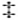

推理
“在坡为它注入生命力之前，哪儿有真正的侦探小说呢？”
——柯南·道尔
莫格街凶杀案
塞壬唱的什么歌，或阿喀琉斯混在姑娘群中冒的什么名，虽说都是费解之谜，但也并非不可揣度。
——托马斯·布朗爵士
被人称为分析的这种智力特征，其本身就很难加以分析。我们领略这种特征仅仅是据其效果。我们于其他诸事物中得知：若是一个人异乎寻常地具有这种智力，他便永远拥有了一种乐趣之源。正如体魄强健者为自己的体力而陶然，喜欢那些能运用其体力的活动一样，善分析者也为其智力而自豪，乐于解难释疑的脑力活动，只要能发挥其才能，他甚至能从最微不足道的小事中感到乐趣。他偏爱猜谜解惑，探赜索隐；在他对一项项疑难的释解中展示他那种在常人看来不可思议的聪明程度。他凭条理之精髓和灵魂得出的结果，实在是有一种全然凭直觉的意味。
解难释疑的能力可以凭研究数学而大大加强，尤其是凭研究它那门最高深的分支——高等数学。高等数学因其逆运算而一直被错误地认为是最杰出的分析，然而计算本身并不是分析，譬如下象棋的人算棋就无须分析。由此可见，下象棋凭智力天性的看法完全是一种误解。我现在并非在写一篇论文，而是非常随意地用一些凭观察而获得的知识作为一篇多少有点离奇的故事的开场白，因此我愿意趁此机会宣称，较强的思考能力用在简单而朴素的跳棋上比用在复杂而无聊的象棋中作用更加明显，更加见效。象棋中各个棋子皆有不同的古怪走法，并有不同的可变化的重要性，而人们往往把这种复杂误以为是深奥(不足为奇的谬见)。下象棋务必全神贯注，若稍有松懈，一着不慎，其结果将是损兵折将或满盘皆输。象棋的走法不仅多种多样而且错综复杂，出错的可能性因此而增多；十局棋中有九局的胜者都赢在比对手更全神贯注，而不是赢在比对手聪明。跳棋与象棋正好相反，它只有一种走法而且很少有变化，因而疏漏的可能性很小，相对而言也无须全神贯注，对局者谁占优势往往取决于谁更聪明。说具体一点，假设一局跳棋双方只剩4个王棋，这时当然不存在疏漏之虞。显而易见(如果棋逢对手)，胜利的取得仅在于某种考究的走法，在于某种智力善用之结果。若不能再用通常的对策，善分析者往往会设身处地地去揣摩对手的心思，这样倒往往能一眼看出能诱他误入歧途或忙中失算的仅有几招(有时那几招实在简单得可笑)。
惠斯特牌一向因其对所谓的计算能力有影响而闻名，而那些智力出众者素来爱玩惠斯特而不下无聊的象棋也为众人所知。毫无疑问，在这类游戏中再没有什么比玩惠斯特更需要分析能力。整个基督教世界最好的象棋手或许也仅仅是一名最好的棋手，可擅长玩惠斯特就意味着具有在任何更重要的斗智斗法的场合取胜的能力。我说擅长，是指完全精通那种囊括了获取正当优势的全部渠道的牌技。这些渠道不可悉数，而且变化无穷，并往往潜伏在思想深处，一般人完全难以理解。留心观察就能清楚记忆，就此而言，专心致志的棋手都是玩惠斯特的好手，只要他能把霍伊尔牌谱中的规则(以实战技巧为基础的规则)完全弄懂。于是记忆力强和照“规则”行事便普遍地被认为是精于此道的要点。但偏偏是在超越规则范围的情况下，善分析者的技艺才得以显示。他静静地做大量的观察和推断。但也许他的牌友们也这么做；所以所获信息之差异与其说是在于推断的正误，不如说是在于观察的质量。必要的是懂得观察什么。我们的牌手一点儿不限制自己，也不为技巧而技巧而拒绝来自技巧之外的推论。他观察搭档的表情，并仔细地同两位对手的表情逐一比较。他估计每人手中牌的分配，常常根据每人拿起每张牌时所流露的眼神一张一张地计算王牌和大牌。他一边玩牌一边察颜观色，从自信、惊讶、得意或懊恼等等不同的表情中搜集推测的依据。他从对手收一墩赢牌的方式判断收牌人是否会再赢一墩同样花色的牌。他根据对手出牌的神态识别那张牌是否声东击西。总之，对手偶然或无意的只言片语，失手掉下或翻开一张牌及其伴随的急于掩饰或满不在乎，计点赢牌的墩数以及那几墩牌的摆法，任何窘迫、犹豫、焦急或惶恐，全都逃不过他貌似直觉的观察，都向他提供了真实情况的蛛丝马迹。两三个回合下来他便对各家的牌胸有成竹，从此他的每张牌都出得恰到好处，仿佛同桌人的牌都摆在了桌面上似的。
分析能力不可与单纯的足智多谋混为一谈，因为虽说善分析者必然足智多谋，但足智多谋者却往往出人意料地不具有分析能力。常凭借推断能力或归纳能力得以表现的足智多谋被骨相学家(错误地)归之于某一独立器官，并认为是一种原始能力，但这种能力是那么经常地见之于其智力在别的方面几乎等于白痴的人身上，以致引起了心理学者的普遍注意。实际上，在足智多谋和分析能力之间存在着一种比幻想和想象之间的差别还大得多的差异，不过两者之间有一个非常类似的特征。其实可以看出，足智多谋者总沉湎于奇思异想，而真正富于想象力的人必善分析。
在某种程度上，读者可以把下面这个故事看作是对上文一番议论的注解。
18××年春天和初夏我寓居在巴黎，其间结识了一位名叫C.奥古斯特·迪潘的法国人。这位年轻绅士出身于一个实际上颇有名望的高贵家庭，但由于一系列不幸的变故，他当时身陷贫困，以致意志消沉，不思振作，也无意重振家业。多亏债主留情，给他留下了一小部分财物；他就凭来自那份薄产的收入，精打细算维持起码的生活，除此倒也别无他求。实际上书是他唯一的奢侈品，而在巴黎书是很容易到手的东西。
我与他初次相遇是在蒙马特街一家冷僻的图书馆里，当时我们都在寻找同一本珍奇的书，这一巧合使我俩一见如故。此后我们就频频会面。他以法国人那种一谈起自己的家庭就少不了的坦率把他的家史讲得很详细，我则怀着极大的兴趣听得津津有味。我对他的阅读面之广大为惊讶；而更重要的是，我感到他炽烈的热情和生动新奇的想象在我的心中燃起了一把火。当时我正在巴黎追求我自己的目标，我觉得与他那样的人交往对我来说是一笔无价的财富。我真诚地向他袒露了我的这一感觉。最后我俩商定，在我逗留巴黎期间我俩将住在一起。由于我当时的境况多少不像他那般窘迫，他同意由我出钱在圣热尔曼区一个僻静的角落租下了一幢式样古怪、年久失修、摇摇欲坠的房子，那房子因某些迷信而长期闲置，我俩对那些迷信并未深究，只是把房子装饰了一番，以适应我俩共有的那种古怪的忧郁。
倘若我们在这幢房子里的日常生活为世人所知，那我俩一定会被人视为疯子，不过也许只被视为于人无害的疯子。我们完全离群索居，从不接纳任何来客。实际上我一直小心翼翼地没把我俩的隐居处告诉我以前的朋友，而迪潘多年前就停止了交友，在巴黎一直默默无闻。我俩就这样避世蛰居。
我的朋友有一个怪诞的习性(除了怪诞我还能称什么呢？)，他仅仅因为黑夜的缘故而迷恋黑夜；而我也不知不觉地染上了他这个怪癖，而就像染上他其他怪癖一样；我完全放任自己心甘情愿地服从他的奇思狂想。夜神不可能总是伴随我们，可我们能够伪造黑夜。每当东方露出第一抹曙光，我们就把那幢老屋宽大的百叶窗统统关上，再点上两支散发出浓烈香味、放射出幽幽微光的小蜡烛。借着那点微光，我们各自沉浸于自己的梦幻之中——阅读、书写，或是交谈，直到时钟预报真正的黑夜降临。这时我俩便手挽手出门上街，继续着白天讨论的话题，或是尽兴漫步到深更半夜，在那座繁华都市的万家灯火与阴影之中，寻求唯有冷眼静观方能领略到的心灵之无限激动。
每当这样的时候，我就不能不觉察并赞佩迪潘所独具的一种分析能力，不过我早就从他丰富的想象力中料到他具有这种能力。他似乎也非常乐意对其加以运用，如果恰好不是炫耀的话。他毫不含糊地向我承认这为他带来乐趣。他常嬉笑着向我夸口，说大多数人在他看来胸前都开着一扇窗户，他还惯于随即说出我当时的所思所想，以此作为他那个断言直接而惊人的证据。这种时候他显得冷冷冰冰、高深莫测，两眼露出心不在焉的神情；而他那素来洪亮的男高音会提到最高音度，若不是他言辞的审慎和阐释之清晰，那声音听起来真像是在发火。看到他心绪这般变化，我常常会想到那门有关双重灵魂的古老哲学，并觉得十分有趣地幻想有一个双重迪潘，一个有想象力的迪潘和有分析能力的迪潘。
别以为我刚才所说的是在讲什么天方夜谭，或是在写什么浪漫传奇。我笔下已经写出的这位法国人的言行，纯然是一种兴奋的才智，或说一种病态的才智之结果。不过我最好举一个例子来说明他在那一时期的观察特点。
一天晚上我俩在王宫附近一条又长又脏的街上漫步。显然当时我俩都在思考问题，至少已有15分钟谁也没吭一声。突然，迪潘开口说了这句话：
“他是个非常矮小的家伙，这一点没错，他更适合去杂耍剧院。”
“那当然。”我随口应答，一开始并没有意识到迪潘所言与我心中所思完全不谋而合这一蹊跷之处(因为我当时正想得出神)。转眼工夫我回过神来，才不由得感到大吃一惊。
“迪潘，”我正颜道，“这真叫我难以理解。不瞒你说，我都被弄糊涂了，几乎不敢相信自己的感觉。你怎么可能知道我正……”我故意留下半句话，想弄清他是否真的知道我正在想谁。
“……想到尚蒂耶，”他说，“干吗说半句话？你刚才正在想他矮小的个子不宜演悲剧。”
这正是我刚才心中所想到的问题。尚蒂耶原来是圣德尼街的一个修鞋匠，后来痴迷于舞台，曾在克雷比雍的悲剧《泽尔士王》中试演泽尔士一角，结果一番苦心换来冷嘲热讽，弄得自己声名狼藉。
“看在上帝份上，”我失声嚷道，“请告诉我诀窍(如果有诀窍的话)，告诉我你能看透我心思的诀窍。”说实话，我当时竭力想掩饰自己的惊奇，可反倒比刚才更显诧异。
“诀窍就是那个卖水果的，”我朋友答道，“是他使你得出结论，认为那个修鞋匠个子太矮，不配演泽尔士王和诸如此类的角色。”
“卖水果的!你可真让我吃惊!我并不认识什么卖水果的。”
“就是我们走上这条街时与你相撞的那个人。这大约是15分钟之前的事。”
这下我记起来了，刚才我俩从C街拐上这条大街时，的确有个头上顶着一大筐苹果的水果贩子冷不防地差点儿把我撞倒。可我不能理解的是，这和尚蒂耶有什么关系。
迪潘脸上没有丝毫糊弄人的神情。“我给你解释一下，”他说，“听完解释你也许就完全清楚了。我们先来回顾一下你刚才的思路，从我开口说话追溯到那卖水果的与你相撞。这段时间你思维的主要环节是：尚蒂耶、猎户星座、尼科尔博士、伊壁鸠鲁、石头切割术、铺路石和那个卖水果的。”
很少有人在其一生中没有过这样的消遣，那就是回顾自己的思路是怎样一步步到达某个特殊的结论。这样的回顾往往非常有趣，而初次进行这种回顾的人常常会惊于发现自己最初的念头或思路的最后终点竟会相差十万八千里，完全风马牛不相及。所以，当听完迪潘那番话并不得不承认他所言句句是真时，我心中当然是万分惊讶。他继续道：
“如果我没记错，我们走出C街之前一直在谈马。那是我们刚才谈论的最后一个话题。当我们拐上这条街时，一位头顶大筐的水果贩子从我俩身边匆匆擦过，把你撞到了一堆因修人行道而堆起来的铺路石块上。你踩上了一块松动的石块，滑了一下，稍稍扭了脚脖子，你显得有点儿生气或是不高兴，嘴里嘀咕了几声，回头看了看那堆石块，然后不声不响地继续行走。我并非是特意要留神你的举动，只是近来观察于我已成了一种必然。
“后来你两眼一直盯着地面，面带怒容地看那些坑洼和车辙(结果我看出你还在想那些石块)，这样一直走到那条名叫拉马丁的小巷，就是那条正尝试用交搭铆接的砌石铺地面的小巷。这时你脸上露出了喜色，我还看见你嘴唇动了一动，我毫不怀疑你念叨的是‘石头切割术”，一个非常适用于那种铺砌法的术语。我知道你不可能在念叨‘石头切割术’这个词的时候不联想原子这个同根词，从而进一步想到伊壁鸠鲁的原子说；因为我俩不久前讨论过这个题目，当时我向你说起那个杰出的希腊人那些模糊的推测是多么奇妙但又多么不为人知地在后来的宇宙进化星云学说中得到了证实，我觉得你免不了会抬眼去望望猎户座中那团大星云，我当然料到你会那样做。你果然抬眼望了，这下我确信自己摸清了你的思路。而在昨天的《博物馆报》上发表的那篇针对尚蒂耶的讽刺长文中，那位挖苦修鞋匠一穿上厚底戏靴就改了名的讽刺家引用了一句我俩经常爱提到的拉丁诗句：
第一个字母已失去它原来的发音。
我曾告诉过你，这句诗说的是猎户星座，现在拼作Orion，但从前拼作Urion；由于我解释时也有几分挖苦，我想你对此不会轻易忘记。所以这非常清楚，你不会不把猎户星座和尚蒂耶这两个概念连在一起。从你嘴角掠过的那种微笑我看出你的确把它们合二为一。你想到那位怪可怜的鞋匠成了牺牲品。在此之前你一直弯着腰在走路，可那会儿我看见你挺直了腰板。这下我肯定你想到了尚蒂耶矮小的身材，于是我打断了你的思路，说他(那个尚蒂耶)是个非常矮小的家伙，他更适合去杂耍剧院。”
那件事发生不久后的一天，当我俩在读《法庭公报》晚间版时，下面一则短讯吸引了我们的注意力。
“离奇血案：今晨3点左右，圣罗克区的居民被一阵可怕的尖叫声惊醒，声音明显是从莫格街一幢房子的四楼发出，人们知道那幢楼房里只住着一位姓莱斯巴拉叶的夫人和她的女儿卡米耶·莱斯巴拉叶小姐。邻人试图以正常途径进门未果，稍后用一撬棍撬开大门，八九位邻居在两警察陪同下入内。此时尖叫声已停，但当众人冲上一楼楼梯时，听出有两个或两个以上粗野的声音在争吵，争吵声似乎从楼上传出。当人们登上二楼时，那些声音也听不见了，这时整座楼房一片沉寂。人们分头匆匆搜寻一个个房间。当搜寻者进入四楼一个朝后的大套间时(该套间房门反锁，人们是破门而入)，室内的景象令每个人都又惊又怕。
“房间里乱七八糟，家具全被砸碎，并被扔得满地都是。屋里只有一个床架，床垫早被拉开，抛在了屋子中央。一张椅子上搁着一把沾满血迹的剃刀。壁炉前的地板上有两三束又长又密的灰白头发，头发也沾满鲜血，仿佛是被连着头皮一块扯下的。人们在地上找到四枚金币、一只黄玉耳环、三把大银匙、三把小铜匙，另外还发现两只袋子，里面大约装有四千金法郎。屋角一个衣柜的抽屉全被拉开，虽说抽屉里仍有许多衣物，但显然已经遭到过搜劫。在床垫下(不是在床架下)发现一只小铁箱。铁箱开着，钥匙还插在箱盖上。箱里只有几封旧信和一些无关紧要的票据。
“屋里不见莱斯巴拉叶夫人的踪迹；但壁炉里异乎寻常的大量烟灰使人们搜查了烟囱，(说来可怕!)从烟囱里拖出了卡米耶的尸体，她原来头朝下脚朝上地硬被人往那狭窄的烟道里塞上去一大截。尸体尚有体温。细看可见遍体擦伤，这无疑是被塞进和拉出烟道所致。死者面部有许多严重的抓伤，喉部有深紫色淤痕并有深凹的指甲印，似乎受害人是被掐死的。
“在对该楼各处的彻底搜寻均无进一步发现之后，搜寻者来到了屋后一个石块铺地的小院，院内躺着老夫人的尸体，她的喉部被完全割断，当搜寻者试图抬起尸体时，头与尸体分离。老夫人的身体和头部均血肉模糊，尤其是身体早已不成人形。
“本报认为，这桩可怕的疑案目前尚无丝毫头绪。”
第二天的报纸登载了如下详情。
“莫格街悲剧：针对这个离奇而恐怖的事件(“事件”一词在法国尚不含我们已赋予该词的轻薄之义)，许多有关人士已被传讯，但传讯结果仍未使案情明朗。现将重要证词摘引如下。
“波利娜·迪布尔，洗衣女工，证实她认识两位死者已有3年，其间一直为她们洗衣。那位老夫人和她女儿似乎相处和睦，非常相亲相爱。她们信用很好。说不出她们的生活方式或生活来源。认为莱斯巴拉叶夫人靠算命谋生。据说有储蓄。每次取衣送衣从不曾见过房子里有旁人。确信她们未雇有佣人。除了四楼之外，其他各楼好像都没有家具。
“皮埃尔·莫罗，烟草零售商，证实他将近4年来一直向莱斯巴拉叶夫人零售烟草和鼻烟。出生在该城区，并一直居于附近。死者母女俩住进那幢其尸体被发现的楼房已逾6年。此前房子被一名珠宝商租用，他曾把楼上的房间转租给三教九流。房子本是莱斯巴拉叶夫人的财产。她后来不满意房客如此糟蹋房屋，便不再出租，自己住了进去。老夫人很傻气。证人在6年中只见过她女儿五六次。母女俩过着一种离群索居的生活，传闻很有钱。听邻里说莱夫人算命，但不相信。从不见任何外人出入那幢房子，除了那母女俩，只有一位搬运工来过一两回，一名大夫去过七八次。
“众证人，均为邻居，提供了同上相似的证词。都说不见有人常去那房子。莱夫人及其女儿是否有什么亲朋好友不得而知。房子正面的百叶窗很少打开。屋后的窗户则总是关着，除了四楼那个大套间例外。那房子是幢好房子，不算太旧。
“伊西多尔·米塞，警察，证实他于当日凌晨3点左右应召到现场，发现有二三十人正在设法进入那幢楼房。最后终于用一把刺刀(不是用撬棍)撬开了大门。撬门并不太难，因为那是一道折门或说双扇门，上下都没有加闩。楼上尖叫声直到撬门时还在继续，随后戛然而止。它们听起来像是某个人(或某些人)极度痛苦的惨叫，声音又响又长，不是又短又急。证人率众上楼。在一楼楼梯平台听到两个发怒的声音在大声争吵，一个声音粗哑，另一个非常尖厉，是一种非常奇怪的声音。粗哑声讲的是法语，能听出个别字眼。确信不是女人的声音。能听清的字眼是‘该死’和‘见鬼’。尖厉声讲的是一种外国话。不能肯定是男人还是女人的声音。不能分辨声音内容，但认为讲的是西班牙语。该证人对那个房间和死者尸体的描述与本报昨日描述相同。
“亨利·迪瓦尔，邻居，职业为银匠，证实他是最先进屋者之一。总体上确证了米塞的证词。他们一进楼房就重新关闭了大门，以免围观者进入，因为虽是深更半夜，观者仍蜂拥而至。这名证人认为那个尖厉之声是一个意大利人的声音。认定讲的不是法语。不能肯定那是男人的声音。说不定是女人的声音。证人不谙意大利语。不能分辨词义，而是凭语调确信说话者乃意大利人。认识莱夫人及其女儿。曾与两位死者多次交谈。确信那个尖厉的声音不是受害的母女俩的声音。
“奥登赫梅尔，饭店老板。该证人自愿提供证词。不会讲法语，通过译员接受讯问。阿姆斯特丹人。尖叫声传出时正经过那幢楼房。尖叫声持续了好几分钟，恐怕有10分钟。声音拖得很长而且大声，非常可怕，非常凄惨。是最先进楼的一员。除一点不同外在其他各方面均确证了原有证词。确信那个尖厉之声是男人的声音，法国男人。不能辨别词义。声音很大而且急促，发音长短不均匀，说话时显然是又怒又怕。那声音刺耳，与其说是尖厉不如说是刺耳。不能称之为尖厉的声音。那个粗哑的声音不住地说‘sacré’‘diable’，还叫了一声‘mon Dieu’[43]。
“朱尔·米尼亚尔，银行家，在德洛兰街开有米尼亚尔父子银行。证人系老米尼亚尔。莱斯巴拉叶夫人有些财产。有年春天在他银行开了个账户(是8年前)。经常存入小笔款子。8年间从未取款，直到遇害前3天才亲自来银行提清全部存款共计四千法郎。这笔钱付的是金币，由一名银行职员送去她家。
“阿道夫·勒邦，米尼亚尔父子银行职员，证实那天中午时分由他提着分装成两袋的四千法郎陪送莱斯巴拉叶夫人回家。门开后莱斯巴拉叶小姐出来从他手中接过一只钱袋，而老夫人则接过了另一只。于是他鞠了一躬就告辞了。当时未见街上有旁人。那是条背街，很僻静。
“威廉·伯德，裁缝，证实他为进入楼房的人之一。他是英国人。在巴黎已居住两年。最先冲上楼梯的就有他。听到了吵架的声音。粗哑的声音是一个法国人的声音。当时听懂一些字句，但现在全忘了。只记得清楚地听见‘该死’和‘我的天哪’。当时似乎有一种几个人搏斗的声音，一种厮打格斗的声音。那个尖厉声嗓门很大，比粗哑声更大。确信那声音不是英国人的声音。像是德国人的声音。很可能是女人的声音。证人不懂德语。
“上述4名证人又经传讯，证实发现莱小姐尸体那个套间的门当时是反锁着的。他们到达门边时屋内静寂，没听见呻吟或其他任何声音。破门而入后未见任何人影。套间内外间的窗都关下并从里面牢牢闩上。两个房间之间那道门关着，但未上锁。外间通往走道的门锁着，钥匙挂在门内锁孔。四楼走道尽头临街一面的一个小房间开着，门是半开半掩。那里面堆满了旧床破箱和诸如此类的杂物。那些东西都经过仔细的搬动和搜查。整幢楼没有一个角落没被小心翼翼地搜过。所有烟囱上上下下也都扫过。那是一幢四层楼的房子，外加阁楼(屋顶室)。屋顶上一扇天窗被钉得很死，看上去多年未曾开过。从听到争吵声到撞开四楼套间门之间有多名证人各说不一。说短者是3分钟，说长者有5分钟。开房门花了不少功夫。
“阿方索·加西奥，棺材店老板，证实他居住在莫格街。西班牙人。进入楼房的人之一。未上楼。胆小，怕吓出毛病。听到了吵架声。粗哑声是法国人的声音。未能听清说些什么。尖厉声是英国人的声音，确信这点。证人不懂英语，而是凭语调断定。
“阿尔贝托·蒙塔尼，糖果店老板，证实他当时在最先上楼梯的人当中。听到了那两个声音。粗哑声是个法国人的声音。听清了几个字眼。说话人好像是在劝告什么人。未能听清尖厉声说些什么。说得急促而且音调起伏不匀。认为是一个俄国人的声音。大体上确证其他证词。证人是意大利人，从未与俄国人交谈过。
“几名证人再经传讯，证实四楼各房间的烟囱都很窄小，人体不可能穿过。他们扫烟道用的是柱形扫帚，和扫烟囱人专用的扫帚一样，该楼每一个烟囱都用这种扫帚扫过。该楼房没有后楼梯，他们上楼时不可能有任何人下楼。莱斯巴拉叶小姐的尸体在烟囱里塞得太紧，以致他们四五个人一齐用劲才拖下来。
“保罗·迪马，医生，证实当天清晨被请去验尸。当时两具尸体都躺在发现莱斯巴拉叶小姐的那个房间里那个床架的麻布底垫上。那位年轻小姐遍体淤痕和擦伤。她被塞进烟囱这一事实足以说明伤痕的原因。咽喉严重掐伤。颏下有几处深度抓伤，并有一串显然是指印的青黑色斑点。死者面部完全变色，眼珠凸出。舌头被部分咬穿。胸部发现一大团淤痕，显然是由膝盖压迫所致。依照迪马先生的看法，莱斯巴拉叶小姐是被一人或数人掐死。那位老夫人的尸体支离破碎。右腿和右臂的全部骨骼都或轻或重碎裂。左胫骨和左侧全部肋骨均粉碎性折断。整具尸体可怕地淤血变色。很难解释这些伤害是如何造成。除非有一臂力过人之壮汉双手挥动大木棒、粗铁棍，或抡起一把椅子或任何又大又沉的钝器，方能对人体造成如此伤害。女人使用任何凶器都不可能造成这种重伤。证人见到死者时，死者头部与身体已完全分离，头颅严重破损。咽喉显然是被某种利器割断，大概是一把剃刀。
“亚历山大·艾蒂安，外科医生，和迪马先生一道被请去验尸。与迪马先生陈述相同，见解一样。
“尽管还传讯了其他几名证人，但没有任何进一步的重要发现。一桩案情如此神秘莫测、扑朔迷离的谋杀案，在巴黎可谓史无前例，如果这真是一桩谋杀的话。面对这一异乎寻常的奇案，巴黎警方正不知所措，处境尴尬。然而，此案目前尚无任何明显的线索。”
该报晚间版又发消息，说圣罗克区依然人心惶惶。那幢房子再次被仔细搜查，有关证人再次被警方传讯，结果仍属徒劳。然而消息后附加的短讯提到，阿道夫·勒邦已被逮捕入狱，不过除了报上已详载过的事实之外，并未有任何证据说明他有罪。
迪潘似乎对这一事件的进展特别感兴趣，至少我从他的神态中这么判断，因为他对此事一直未加评论。直到勒邦被捕的消息公布之后，他才问我对这桩凶杀的看法。
我只能附和整个巴黎的见解，认为这是一个不解之谜。我看不出有任何可能找到凶手的办法。
“我们绝不能凭调查的表象来判定方法。”迪潘说，“素来因聪明干练而被交口称誉的巴黎警察确是干练，但也仅仅是干练而已。除了目前所用的方法，他们在破案中毫无绝招。他们大肆炫耀有许多锦囊妙计，但并非不是常常用得驴唇不对马嘴，结果总使人想到儒尔丹先生要睡衣，以便更清楚地听音乐[44]。他们破案的成绩也并非不是常常令公众惊讶，但那多半都是单凭不辞劳瘁的苦干。而当单凭克尽厥职不奏效时，他们的方略也就宣告失败。譬如，维多克[45]是个推测的能手，也是个百折不挠的男人，但由于缺乏受过教育的头脑，所以不断地因过分的调查而一错再错。他看事物靠得太近，反而有损于他的想象力。他也许能把一两个方面看得特别清楚，但与此同时却必然会忽略事物的全面。这样，事情在他看来就显得太深邃。真相并非总是在井里。其实对于越是重要的真知，我倒越认为它一定浅显易得。其深邃在于我们去寻它的那些幽谷，而不在它被找到的那些山顶。这种错误的模式和原因在对天体的注视中显得最为典型。侧目看星星，就是斜着眼看，即朝向星星的是视网膜的外侧(因为外侧对弱光比内侧更敏感)，这时候最能够欣赏到星星的璀璨，一种我们正眼看它时会相应变暗的璀璨。正眼看星星时，大部分星光实际上仅仅是落在了眼睛上，可侧目看星星，则会有一种更精确的领略。过分的深究会搅乱并削弱我们的思想；一种过于持久、过于专注、过于直接的凝视，甚至有可能使金星也从夜空黯然消失。
“至于那桩凶杀案，在我们形成看法之前先让我们自己来进行一番调查，一种能为我们提供消遣的调查(我认为消遣这个词用得很怪，但没吱声)。再说，勒邦曾经帮过我一个忙，对此我不能忘恩负义。我们应该去亲眼看看那幢房子。我认识警察局长G，得到必要的允许不成问题。”
得到允许之后，我俩立即前往莫格街。那是里舍利厄街和圣罗克街之间的一条糟糕的街道。我们到达那里已是下午较晚的时候，因为那个区离我们住的区相隔很远。那幢房子很容易就被找到；因为在它的街对面还有许多人毫无目的但却满心好奇地在凝望它那些紧闭的窗户。那是一幢普通的巴黎式楼房，有一个门道，门道一侧是一间装有玻璃的小屋，小屋窗上的一个滑动窗格说明那是间门房。进楼之前我们沿街而行，拐进一条小巷，然后再转弯经过房子的后面，在这期间，迪潘十分仔细地把那房子和四邻周围都查看了一遍，我看不出这番细查有什么目的。
我们原路折回，再次来到楼前，揿响了门铃，出示了证件，警方的守卫人员让我们进了房子。我们径直上楼，来到发现莱斯巴拉叶小姐尸体的那个套间，两名死者的尸体还仍然放在那里。按常规做法，屋里仍保持着那副乱七八糟的模样。我看到的和《法庭公报》上所描述的没什么出入。迪潘仔细检查了每一样东西，连受害人的尸体也没漏掉。然后我们查看了其他房间，最后来到屋后那个小院，整个过程一直有一名警察陪着我们。我们查完现场离开时已经天黑。回家途中，我那位朋友进一家报馆耽误了片刻。
我已经说过我那位朋友突发的奇思异想真是层出不穷，对他那些怪念头Je les ménageais[46](我在英文中找不到合适的说法)。他回家后闭口不谈那桩凶杀案，这就是他的脾性。直到第二天中午他才突然问我，在凶杀现场是否观察到什么特别情况。
他对“特别”二字的强调中有某种意味，竟使我莫名其妙地猛然一抖。
“没有，没有什么特别的，”我说，“至少跟咱们从报上看到的情况差不多。”
“恐怕那份《公报》还没有领略到这桩惨案中那种异乎寻常的恐怖性。”他应答说，“不过别去管那份报纸的无稽之谈。在我看来，这个谜之所以被认为无法解开，倒正是因为那本该使它被认为容易解开的理由，我指的是因为其特征所具有的超越常规的特性。警方感到尴尬，因为表面上毫无动机，不是说凶杀本身的动机，而是指杀人手段那么残忍的动机。他们还大惑不解，因为从表面上看来，楼上除了莱斯巴拉叶小姐再没发现旁人是个事实，凶手逃离现场必然被上楼者看见也是个事实，而这两个事实无论如何也不可能统一。那个房间被折腾得乱七八糟，姑娘的尸体被倒塞进烟囱，老夫人的尸首支离破碎，这一切加上我刚才提到的事实以及其他我无须提及的事实，已足以使警方夸耀的聪明无法施展，使他们那份干练不能奏效。他们已陷入那个严重但寻常的谬误，错把异常混同于深奥。可正是要凭着那些超越常规的异常，理性方能摸索出探明真相的途径，假若那途径果真存在的话。例如在我们眼下进行的调查中，该问的与其说是‘出了什么事’，不如说是‘出了什么从未出过的事’。实际上我将解开此谜或已经解开此谜的那种轻而易举，与警方眼中此谜显然不可解的看法刚好成正比。”
我盯着迪潘，暗自惊讶。
“我此刻正在等候，”他两眼望着房门继续说道，“我在等一个人，尽管此人也许并非本案的凶手，但他肯定与这场凶杀有几分牵连。他可能对这场残杀中最令人发指的那部分一无所知。我期待我的推测完全正确，因为我揭开整个谜底的希望就建立在这个推测上。我期待那个人来这儿，来这个房间，随时随刻。当然，他有可能不来，但他多半会来。若是他来了，就有必要把他稳住。这儿是手枪，如果必要的话，咱俩都知道如何使用。”
我取了手枪，几乎不知道自己在做什么，或是几乎不相信自己所听到的，而迪潘还在继续往下说，很像是在自言自语。我已经谈到过他在这种时候那副心不在焉的神态。他说话的对象是我，说话的声音也不大，但他所用的却是那种通常跟老远的人说话时所用的高音调。他的眼睛只茫然地盯着墙壁。
他说：“上楼的人所听到的争吵声不是那两个女人的声音，这一点已被证人充分证实。这就排除了我们对是否那位老夫人先杀死女儿，然后再自杀的怀疑。我提到这一点主要是为了探讨作案的手段，因为莱斯巴拉叶夫人的力气完全不可能把她女儿的尸体塞进烟囱并塞成其被发现时的那个样子，而她自己身上的那种伤势也完全排除了她自杀的可能。所以，凶杀是由第三者所为，而这个第三者的声音便是人们所听到的争吵声。现在让我来谈谈有关争吵声的证词，不是全部证词，而只谈证词中的特别之处。你注意到什么特别之处没有？”
我注意到虽然所有证人都一致认定那个粗哑声是一个法国人的声音，但说到那个尖厉声，或按其中一名证人的说法是刺耳声，他们的认定就莫衷一是。
“那本身就是证据，”迪潘说，“但并不是证据的特异之处。你还没有注意到奇特的地方，可这里有一点值得注意。如你所言，证人们对那个粗哑声意见相同，在这一点上他们众口一词。但说到那个尖厉声，特异之处不在于他们莫衷一是，而在于当一个意大利人、一个英国人、一个西班牙人、一个荷兰人和一个法国人试图形容那个声音时，每个人都说那是一个外国人的声音。每个人都确信那不是他一名同胞的声音。每个人都没有把那个声音比拟成他所熟悉的任何语言的声音，而是恰恰相反。那名法国警察认为那是一个西班牙人的声音，而‘要是他懂西班牙语就会分辨出几个字眼’。那个荷兰人确信那是一个法国人的声音，可我们发现证词说他‘不懂法语，通过译员接受讯问’。那位英国人认为那是一个德国人的声音，可他‘不懂德语’。那个西班牙人‘确信’那是一个英国人的声音，但他完全‘凭语调断定，因为他压根儿不懂英语’。那位意大利人认为那是一个俄国人的声音，但他‘从未与俄国人交谈过’。此外，另一名法国人与那位法国警察的说法不同，他肯定那是一个意大利人的声音，但他不谙意大利语，而是像那个西班牙人一样‘凭语调确信’。瞧，那个声音该有多么稀奇古怪，居然能诱出如此言人人殊的证词!连欧洲五大区域的人都没法从它的声调中听出点儿熟悉的东西!你可以说那也许是一个亚洲人，或非洲人的声音。巴黎的亚洲人或非洲人都不多，但我们先不去否定这种推断，我现在只想要你注意三点。有一位证人说那声音‘与其说是尖厉不如说是刺耳’。有两名证人描述那声音‘急促而不均匀’。没有一个证人提到从那声音里听出了什么字眼，或者说像什么字眼的声音。
“到此为止，”迪潘继续说，“我不知道我刚才所言对你自己的理解有何影响；但我毫不犹豫地说，正是从证词的这一部分(关于粗哑声和尖厉声的部分)所做出的合理推断，其本身就足以引发出一种怀疑，而这怀疑将指明进一步调查这桩疑案的方向。我说‘合理推断’，但这并没有充分表达我的意思。我想说的是，这种推断是唯一恰当的推断，而那种怀疑则是这推断必然引出的唯一结果。但那种怀疑是什么，我暂且不表。我只要你记住，在我自己看来，那种怀疑足以使人信服地使我在调查那个套间时有一个明确的方式，一个确定的倾向。
“现在让我们想象又回到了那个套间。我们首先该探寻什么呢？凶手逃离现场的途径。咱俩谁也不相信超自然的怪事，这样说一点也不过分。莱斯巴拉叶母女俩不会被幽灵杀害。凶手是有血有肉的，其逃离也是有形有迹的。那如何逃走的呢？幸运的是这问题只有一种推论方法，而这种方法必然把我们引向一个明确的结论。让我们来逐一审视凶手可能的逃路。非常清楚，人们上楼时凶手正在后来发现莱斯巴拉叶小姐的那个房间，或至少在那个套间里的另一个房间。所以，我们只需从这两个房间去寻找凶手的逃路。警方已经全面彻底地检查过那两个房间的地板、天花板和墙壁。没有什么秘密出口能逃过他们的检查。但我信不过他们的眼睛，自己又查了一遍。所以，绝对没有秘密出口。两个房间通往过道的门都锁得严严实实，钥匙都插在房内。我们再看那些烟囱，虽然壁炉上方的烟道口也有通常的八九英尺宽，但整个烟道连一只个头稍大一点儿的猫也钻不过去。这样，上面所说的地方都绝对不可能成为逃路，那我们就只好来看看窗户了。从前面那个房间的窗户逃走不可能不被街上的人群看见。因此，凶手一定是从后面那个房间的窗户逃走的。现在，既然我们已经如此毫不含糊地得出了这个结论，那作为推论者，我们就不应该因为看上去不可能而对它予以否定。我们只能够去证明那些看上去的‘不可能’实际上并非不可能。
“那个房间有两扇窗户。其中一扇未被家具遮掩，整体均可被看见。另一扇的下半部分被紧靠它的床架的一头挡住。前一扇窗户被发现从里边闩得牢牢实实，任何人使尽浑身力气也休想把它提起[47]。它窗框的左沿被钻有一个大孔，一颗粗实的长钉十分吻合地横插在孔内，孔外几乎只露出钉头。打量另一扇窗户。可见同样的一颗铁钉同样严丝合缝地横插于孔内，即便用力也同样提不起那扇窗户，这就使警察完全相信凶手不是从窗口逃走。所以，他们认为拔出插钉开一下窗户是多此一举。
“我的检查则多少更为挑剔，这挑剔的理由我刚才已谈过，因为我知道，那所有看上去的不可能必须被证明为实际上未必不可能。
“我开始沿着这思路琢磨，由果溯因。凶手准是从这两扇窗户中的一扇逃走的。因此，他们不可能从里边重新闩上窗框，像后来我们所发现的那样，由于这一事实显而易见，警方停止了往这方面继续追究。然而，窗框既然被闩上，那它们必有能闩上的动力。这个结论没有漏洞。于是我走到那个没被遮掩的窗口，稍稍用力拔出了插钉，然后试图推上窗框。不出我所料，我用尽力气也推不上。我这才知道窗户肯定暗装有一道弹簧。不管插钉的情况显得有多么神秘，但关窗自有动力这一想法的证实，至少使我确信我的前提是正确的。一番仔细的搜寻使我很快就找到了那个暗装的弹簧。我按了按弹簧并满足于这一发现，便忍住了没有去提起窗框。
“我重新插上钉子并把它仔细观察了一番。一个人出窗之后可以再把窗户关上，那弹簧也会自动碰上，不过这钉子不可能重新插好。这结论很清楚，我的侦察范围再次缩小了。凶手一定是从另一扇窗户逃走的。那么，假定两扇窗户的弹簧可能相同，那两扇窗户的插钉就一定有不同之处，至少在插法上有不同之处。我踏上那个床架的麻布底垫，仔细看了看第二扇窗户露在床头板上方的部分。我把手伸到床头板后面，很容易就发现并按动了弹簧，如我所料，那弹簧与前一扇窗户的弹簧完全相同。我再看插钉，它和另一颗一样粗实，其插法看上去也没什么不同，孔外几乎只露出钉头。
“你会说我这下迷惑了，可要是你这么认为，那你就肯定误解了归纳推理的性质。借用一个打猎术语，我从来没有‘失却嗅迹’。猎物的嗅迹片刻也没有丢失。整根链子不少一个环节。我已经追到这个秘密的终点，这终点就是那颗插钉。我说它在各方面看上去都与另一颗插钉没什么不同，这是事实，但与线索就要在此终结这一重要性相比，这个事实绝对毫无意义(尽管它也许显得非常明确)。我说‘这颗插钉肯定不对劲儿’。我伸手一拔，那钉头连着一小截钉身随着我的手指出了钻孔，而另一截钉身却仍在孔内，原来这颗钉断成了两截。断口是旧的(因为表面已经生锈)，断开显然是由一柄榔头的一击造成的，那一击也把钉头部分嵌在了底窗窗框上。于是我小心地把钉头重新插入我刚才抽出的孔内，它看上去又像一颗完好的钉子，看不出裂缝。我按了一下弹簧，轻轻把窗往上提开几寸，钉头随着窗框上升，同时仍牢牢地嵌在孔内。我放下窗户，那颗钉又显得完好无损。
“到此为止，这个谜总算解开了，凶手是从床头那扇窗户逃走的。窗户在凶手逃出后自动落下(或许是凶手故意关上)，并由那道弹簧牢牢固定；窗户推不上去是因为那道弹簧，警察却误以为是因为那颗插钉，于是认为没必要进一步探究。
“接下来是凶手如何下楼的问题。对这个问题，我在和你一道绕那幢房子转悠时就已经心中有数。离我们所说的那扇窗户大约5英尺半的地方竖着一根避雷针。任何人从这根避雷针都不可能够着窗口，更不用说进入窗口。但我注意到四楼的百叶窗式样特别，是那种巴黎木匠称之为的‘火印窗’。这种式样现在很少采用，但却常见于里昂和波尔多的一些老式建筑。这种窗样子像普通的门(单门，而不是双扇门)，只是窗的上半部被做成或铸成花格式样，这就可以被人当作绝妙的把手。我们所谈论的那些百叶窗宽度足有3英尺半。当我们从屋后望去时，它们正半开着，这就是说，它们与墙面恰好成直角。除我之外，警方可能也查看过房子的背面，若是这样，那他们在看那些宽宽的火印窗时(他们肯定会看)，没有注意到我说的那个宽度，或者无论如何也没有把它作为应当考虑的因素。事实上，由于他们已先入为主地认为那窗口不可能成为凶手的逃路，他们的查看自然而然就非常草率了。然而，在我看来却非常清楚，床头那扇窗户的百叶窗如果打开到足以与墙面成直角的程度，那它离那根避雷针的距离尚不足两英尺。还有一点也非常清楚，凭着异常的矫捷和足够的勇气，从避雷针进入那个窗口是可以办到的。要越过那2英尺半的空中距离(我们现在假定那扇百叶窗是完全敞开)，盗贼可以用一只手先紧紧抓住窗上花格，然后松开抓避雷针的另一只手，再用脚稳稳地顶住墙，大着胆子用力一蹬，这样他可以使那扇百叶窗转动并关上，如果我们假定当时内窗也开着，那他甚至可以顺势跳进房间。
“希望你特别记住，我刚才说要完成那么危险而困难的一跳需要异常的矫捷。我的意图是想让你明白，第一，从窗口进入房间也许是可能的；第二，但这是主要的，我希望你能牢记并领悟那个异乎寻常，那种能够完成这一动作的几乎不可思议的敏捷。
“毫无疑问，你会用法律语言说，‘为了证明我的案例’，我应该宁可低估凶手的能力，也不该充分强调他所需要的敏捷。这在法律上是惯例，但却不是推理的习惯。我的最终目标只是弄清真相。我的直接目的则是要你把下列事实并列起来：我刚才所说的异乎寻常的敏捷，那个特别尖厉(或刺耳)而且不均匀的声音，关于那声音的国籍众证人莫衷一是，从那个声音中辨不出一个音节。”
迪潘最后这段话使我脑子里倏地掠过一个模糊的概念，我好像隐隐约约明白了他的意思。我似乎差一点就要恍然大悟，但最终还是无力完全理解，就像人们有时觉得自己马上就会回忆起某事，可结果还是未能记起来。我的朋友继续他的推理。
“你一定注意到了，”他说，“我已经把话题从逃出去的方式转移到了溜进去的方法。我这是故意向你暗示，进出都是以同一方式，在同一地方。现在让我们来看看室内。让我们来看看房间里的情况。报上说那个衣柜的抽屉遭到过搜劫，尽管许多衣物还留在里边。这是一个悖理的结论。它只是一种猜测，一种非常愚蠢的猜测，仅此而已。我们怎么会知道抽屉里发现的衣物不是抽屉里本来装的全部东西呢？莱斯巴拉叶夫人和她的女儿过着一种离群索居的生活，不会见客人，很少外出，用不着许多衣装。抽屉里的那些衣装至少像是那母女俩所有的最好的衣装。如果盗贼偷了衣服，那他干吗不偷最好的？干吗不全都偷走？简而言之，他干吗对四千金法郎弃之不顾，却劳神费力去偷一堆衣裳？金币被弃之不顾。银行家米尼亚尔先生所提到的那笔钱几乎是原封不动地被发现在地板上的那两个钱袋里。所以，我希望你从你的思维中排除动机这个错误的概念，即警方根据证词中送钱上门那一部分所产生的关于动机的概念(送钱上门，收款人在收到钱3天内被谋杀)，比这蹊跷十倍的巧合在我们的生活中随时都在悄悄地发生在我们每一个人的头上。一般说来，巧合是那种受过教育却不懂概率论的思维者思路上的障碍。而多亏有了概率论，人类对一些最辉煌的目标之探究才获得了最辉煌的例证。就眼下这个实例而言，假如金币丢了，那3天前送去金币之事实就不仅仅是一个巧合。它就可以用来证实我们所说的动机。但是，面对这个实例的真实情况，如果我们还认为金币是杀人动机，那我们也必须想象凶手是一个踌躇不定的白痴，他居然把他的金币连同动机一并抛弃。
“现在请牢牢记住我提醒你注意的几点：那个奇怪的声音，那种异常的矫捷，还有就是那么格外残忍的凶杀却令人吃惊地没有动机。现在就让我们来看看这残杀本身。一个女人被一双手掐死，然后头下脚上地被塞进烟囱。一般的凶手不采用这种手段杀人，尤其是不会这样处理尸体。单凭尸体被向上塞进烟囱的做法，你就得承认这里边有超越常规的蹊跷。即便我们把凶手视为一名最卑劣的歹徒，其做法也超越了我们对人类行为的一般概念。再想想，把尸体往一个狭窄的烟道里向上塞那么紧，以致几个人合力才勉强拖下，这需要多大的力量才能做到!
“且让我们来看看那股最不可思议的力量的其他迹象。壁炉前的地板上有两三束(密密的两三束)灰白头发。头发是被连着头皮一块儿扯下的。你知道要从头上连根拔掉二三十根头发也得费很大的劲儿。你和我都亲眼见到了那几束头发。它们的发根(惨不忍睹!)还粘着头皮上的碎肉片，由此可见那股劲儿有多大，说不定能一次扯掉5万根头发。那位老夫人不仅仅是咽喉被割断，而是整个头部与身体分离：凶器却不过是把剃刀。我希望你也注意到这暴行中残酷的兽性。至于莱斯巴拉叶夫人身上的瘀伤，我就不多说了。迪马先生和他那位可敬的助手艾蒂安先生已经宣布那些伤是由某种钝器造成，而在这一点上那两位先生完全正确。钝器显然就是铺在后院的那些石块，死者正是从床头那扇窗户被扔下后院的。不管这一点现在看来有多简单，但警方却像忽略百叶窗宽度那样把它给忽略了，因为他们的思路已被那两颗插钉牢牢钉死，认为窗户绝不会有打开过的可能性。
“除了以上所说的情况，如果你现在又适当地想到了那个房间的异常凌乱，那我们就已经可以把下列概念串起来了：惊人的矫捷，超人的力量，残酷的兽性，毫无动机的残杀，绝对不符合人性的恐怖手段，再加上一个分不清音节、辨不出意义、在几个国家的人听来都像是外国话的声音。这下产生了什么结论呢？我的话对你的想象力产生了什么作用呢？”
迪潘问我这个问题时，我感到一阵毛骨悚然。“一个疯子，”我说，“是一个疯子干的，一个从附近疗养院逃出来的发了狂的疯子。”
“从某些方面来看，”他答道，“你的猜测也不无道理。但疯子即便在最疯狂的时候，其声音也和人们上楼时所听到的那种声音不相符。疯人也有国籍，不管他们的言辞多么不连贯，但通常都有连贯的音节。再说，疯子的毛发也不像我现在手中的这种。这一小撮毛发是我从莱斯巴拉叶夫人捏紧的手指间发现的。告诉我你对此如何理解。”
“迪潘!”我大惊失色地说，“这种毛发太少见。这不是人的毛发。”
“我也没说它是，”他说，“不过在我们确认它是什么之前，我希望你看看我描出的这幅草图。这幅草图摹画的就是证词中有一部分所说的‘深紫色淤痕和深凹的指甲印’，也就是(迪马先生和艾蒂安先生在证词)另一部分所说的‘一串显然是指印的青黑色斑点’。”
“你会发现，”我的朋友一边说一边把那幅草图摊在我们面前的桌子上，“这幅草图说明那双手掐得多么牢实。没有一点滑动过的痕迹。每个指头都一直(可能一直到受害者死亡)保持在它最初嵌进肉里的位置。现在你来试试把你的手指同时摁在你所见的这些指印上。”
我试了试，可我的指头却对不上那些指印。
“我们这样试验也许不公平，”他说，“这张纸被摊成了平面，但人的脖子是柱形。这儿有根木柴，跟人脖子差不多粗细。把草图包在上面，再试试。”
我又试了试，可这次甚至比刚才更显困难。“这，”我说，“这不是人的手印。”
“那现在就来读读居维叶[48]教授的这段文章吧。”迪潘答道。
那是一段从一般习性和解剖学上对东印度群岛的褐色大猩猩的详细描述。那种哺乳动物以其巨大的体格、惊人的力量、非凡的灵敏、异常的凶残和爱模仿的嗜好而为世人所知。我突然间明白了那桩凶杀的恐怖所在。
我读完那段文章后说：“这里对足趾的描述与这张草图完全吻合。我看除了这儿提到的那种大猩猩外，再没有什么动物的趾印能合上你画下的指印。这撮深褐色毛发也与居维叶描述的那种动物的毛发相同。但是，我仍然不能理解这可怕之谜的一些细节。另外，证人们所听见的争吵声是两个，而其中一个被无可非议地确认为是一个法国人的声音。”
“不错，那你一定记得证人们几乎异口同声地说那声音里有句话是‘我的天哪!’证人之一(糖果店老板蒙塔尼)已经正确地认为那句话在当时的情况下好像是一种劝告或告诫。所以，我已经把解开此谜的希望主要寄托在了这句话上。一个法国人知晓这一惨案。可能(实际上远远不止可能)他在这场血腥的残杀中是无罪的。那只猩猩说不定就是从他那里逃出。他说不定一直追到了那个房间窗下，但由于随后发生的使人不安的事情，他绝不可能重新捕获那只猩猩。猩猩现在还逍遥自在。这不能再猜下去了(除了猜测我现在还没权利用别的名称)，因为我这些想法所依据的思考几乎尚未深刻到可以由我自己的理智做出估价的程度，因为我还不能自称可以让别人了解我的想法。所以我们就把这些想法称作猜测，把它们作为猜测来谈论。假若那个法国人真像我所猜测的在那桩暴行中无罪的话，那我昨晚在回家路上去《世界报》报馆登的这则启事就会把他引到我们这儿来(那是一份航运界的报纸，很受水手们欢迎)。”
他递给我一张报纸，我读到了这则启事：
招领：某日清晨(即凶杀案当日清晨)在布洛涅树林捕获一体大、褐色婆罗洲猩猩。失主(据悉为一艘马尔他商船上的水手)一经验证无误并偿付少量捕获及留养费用，即可将其领回。认领处为圣热尔曼区×街×号，请上四楼。
“你怎么可能知道那人是一名水手，”我问，“而且属于一条马尔他商船？”
“我并不知道，”迪潘说，“我并不肯定。不过这儿有一小根缎带，从这式样和油腻腻的样子来看，它显然是喜欢蓄长辫的水手们系头发用的。况且这个结除了水手，尤其是马尔他船上的水手，很少有人会打。我是在那根避雷针柱脚下拾到这缎带的。它不可能属于那两位被害人。说到底，即便我凭这根缎带就认定那个法国人是一条马尔他商船上的水手这一推断错了，这对我在报上登的那则启事也仍然没有妨害。如果我真错了，他也只会认为我是被某种表象迷惑，绝不会费神来追究。但假若我对了，我的目的也就达到了。那法国人虽知自己在那桩凶杀中是无罪的，但他仍会自然而然地犹豫是否回应那则启事，是否认领那只猩猩。他会这样来说服自己：‘我是无辜的。我穷，我的猩猩值一大笔钱，对我这种处境的人来说算得上是一笔财产。我干吗要因为毫无根据的危险而失去它呢？它就在这儿，伸手可及。它是在布洛涅树林被人发现的，那地方远离凶杀现场。人们怎么能怀疑那桩凶杀是一头畜生所为呢？警察对此案茫然无知，他们迄今尚未找到一丝线索。就算他们查出了那头畜生，也不可能证明我知道那场凶杀，或是因为我知情就定我有罪。最重要的是，我已被人知道。刊登启事那人就认定我是那头畜生的主人。我不清楚他对我到底知道多少。如果我不去认领那份已经知道是属于我而且又值一大笔钱的财产，我至少会使那畜生容易遭人怀疑。我现在既不能让人注意到我，也不能让人注意到那头畜生。我要去应那则启事，认领回那只猩猩，然后把它关起来直到事情过去。’”
这时我们听见楼梯上响起了脚步声。
“准备好手枪，”迪潘吩咐道，“但没有我的信号不要开枪，也别把枪亮出来。”
房子的大门一直开着，来人没按门铃就进到屋里，然后往楼梯上走了几步。然而，他这时似乎又犹豫起来。接着我们听见他下楼的声音。迪潘正飞快地冲向房间门边，此时我们又听见他朝楼上走来。这一次他没有打退堂鼓，而是毅然决然地上了楼，敲响了我们的房门。
“请进!”迪潘的声音里透出高兴和热情。
进来的是个男人。他显然是名水手，高大，魁梧，健壮，一副天不怕地不怕的样子，并不招人讨厌。他那张被太阳晒黑的脸有一大半被他浓密的胡须遮住。他手里拎着根粗实的橡木棍，但除此之外好像没带别的武器。他局促地鞠了一躬，用法语问我们“晚上好”，他的法语虽略带几分讷沙泰勒[49]口音，但仍然足以听出他原籍是巴黎。
“请坐，朋友，”迪潘说，“我想你是为那只猩猩来的。说实话，我真有点羡慕你有这只猩猩，一个非常漂亮的家伙，肯定也非常值钱。你看它有几岁了？”
水手长长地松了口气，露出一种如释重负的神情，然后放心大胆地回答：
“我也说不清楚，但它至多4岁或5岁。你们把它关在这儿吗？”
“哦，不；我们这儿没有关猩猩的设备。它这会儿在迪布尔街一家马车行的马厩里，就在附近。你明天一早就能把它领走。你当然是打算领它回去？”
“的确如此，先生。”
“让它走我还真有点儿舍不得。”迪潘说。
“我并不想让你白辛苦一场，先生，”水手说，“我也不能那么奢望。我是诚心诚意要付一笔酬金以感谢你替我找到那家伙。这么说吧，只要合情合理，你要什么都行。”
“那好，”我朋友答道，“这当然非常公平。让我想想!我该要什么呢？哦!我会告诉你。我要的报酬是这个。我只要你尽可能地告诉我莫格街凶杀案的全部经过。”
迪潘说最后一句话时声音很低，很平静。他也以同样的平静走到门边，锁上房门，把钥匙放进衣袋。然后他从怀里掏出手枪，不慌不忙地放在桌上。
那位水手的脸骤然间涨得通红，好像是憋得透不过气来。他惊得一跃而起，双手紧握木棍；但很快他又颓丧地坐下，浑身发抖，面如死灰。看他一声不吭坐在那儿，我对他不由得生出恻隐之心。
“我的朋友，”这时迪潘用温和的口气说，“你不用害怕，实在不用害怕。我们丝毫没有伤害你的意思。我用一名绅士和法国人的名誉向你担保，我们并不想伤害你。我清楚地知道在莫格街惨案中你是无罪的。但也不可否认你与此案多少有些牵连。从我所说的你肯定已经明白，对此案的真相我早已有了了解的渠道，你做梦也不可能想到的渠道。事情就是这样。你没有犯任何你能避免的错，你当然也就无可指责。虽然你当时尽可神不知鬼不觉地盗走那些金币，可你却甚至分文未取。你没有什么值得隐瞒。你也没有理由隐瞒什么。反之，你在道义上有责任把你所知道的和盘托出。一个无辜的人现在因被控犯有那桩谋杀罪而遭关押，只有你才能说清那桩凶杀的真正凶手。”
那水手听完迪潘这番话，在很大程度上定下神来；只是不再像刚才那样放心大胆。
“老天做证，”他略为踌躇了一下说，“我一定把我所知道的全都告诉你们，不过我并不指望你们能完全相信我的话。如果我那么指望，那我一定是个大傻瓜。但我是无罪的，我即便为此而送命也要说出全部真相。”
他的叙述大致如下。他不久前曾航行到东印度群岛。包括他在内的一伙人在婆罗洲登陆，远足到密林深处游览。他与一位伙伴共同捕获了那只猩猩。伙伴死了，猩猩就归他一人所有。返航途中那猩猩难以驯服的野性使他费了不少周折，但他终于成功地把那家伙带到了巴黎，安全地关进了自己家里，为了不招惹邻居们讨厌的好奇心，他一直小心翼翼地没让猩猩露过面，想等到猩猩脚上一处在甲板上被碎片扎破的伤口愈合后再做打算。他的最终目的是要卖掉猩猩。
就在血案发生的那天晚上，准确地说是那天清晨，当他与一些水手玩了一通后回家时，他发现那畜生已闯出了与他卧室相邻的小房间，正待在他的卧室里，在此之前那家伙一直如他想象的那样十分安全地被关在那个小房间里。那猩猩拿着一把剃刀，满脸肥皂泡，正坐在一面镜子前试着要刮脸，毫无疑问它曾从小房间的钥匙孔里窥视过主人刮脸的动作。看见那么凶猛的动物拿着那么危险的武器并且能那么熟练地使用，他一时间吓得不知如何是好。不过他已经习惯于用鞭子驯服那畜生，即便在它兽性大发的时候，于是他又取出鞭子。那猩猩一见鞭子便猛然跳出卧室，冲下楼梯，从一扇偏巧开着的窗户窜到了街上。
这名法国水手绝望地紧追不舍；那只还握着剃刀的猩猩不时停下来回头看看，朝着追赶它的主人手舞足蹈，待主人快追上时，它掉头又跑。他们就这样追追停停持续了好一阵。当时大街上阒无一人，因为时间已将近凌晨3点。当那只猩猩顺着莫格街后面的一条小巷逃窜时，从莱斯巴拉叶夫人家四楼卧室开着的窗户射出的灯光吸引了它的注意力。冲到那幢房子背后，它看见了那根避雷针，于是它异常敏捷地顺杆而上，抓住了当时完全敞开的百叶窗，凭借百叶窗的旋转，趁势跃上了窗边的床头。这整个过程前后还不到1分钟。猩猩跃进房间时，又顺势把百叶窗给踢开了。
当时那名水手是又高兴又担心。高兴的是他这下很有希望抓住那只猩猩，因为它除了原路退回，几乎不可能逃出它自己钻进的那个陷坑，而它再顺着避雷针杆下来则会被截获。担心的是那家伙很有可能在那个房间里胡作非为。这种担心促使那水手一直追到楼下。爬上一根避雷针柱本来不难，对一名水手来说更是轻而易举，但当他爬到与那窗户一般高时，才发现窗户还隔着老远，他根本跃不过那段距离，他所能做的就是尽量探出身子去看一看房间里的情形。这一看差点儿没吓得他从避雷针杆上摔下来。就是在那个时候，可怕的尖叫声划破了黑夜，把莫格街的居民从睡梦中惊醒。身着睡衣的莱斯巴拉叶夫人和她的女儿当时显然正在整理上文提到过的那个铁箱里的票据，铁箱当时被推到了房间中央，打开着，里面的东西全摊在地板上。被害人肯定是背朝着那扇窗户而坐，从那只猩猩进入房间到屋里传出尖叫声之间这段时间来看，母女俩当时大概并没有立即发现猩猩，她们自然而然地以为百叶窗的响动是由于风吹的缘故。
当水手朝里看时，那只猩猩已抓住莱斯巴拉叶夫人的头发(头发披散着，因为她刚梳过头)，正模仿着刮脸的动作，在她脸前挥舞着那把剃刀。莱斯巴拉叶小姐躺在地板上一动不动，早已吓昏过去。老夫人的尖叫和挣扎(其间她的头发被扯下)使也许本无恶意的猩猩勃然大怒。它有力的臂膀使劲一挥，差点儿没完全割下她的脑袋。喉腔喷出的鲜血使猩猩的大怒变成了疯狂。它龇牙咧嘴，眼冒凶光，扑到那位姑娘的身上，用它可怕的双爪掐住她的脖子，直到那姑娘窒息而死。这时它疯狂而错乱的目光扫向床头，认出了它主人那张几乎吓变形的脸。毫无疑问它还记得鞭子可怕的滋味，它的疯狂顿时变为恐惧。自知难逃鞭子的惩罚，它似乎想掩盖它血腥的罪行，紧张不安地在屋里跳来蹿去；这下房间被弄得乱七八糟，家具被摔得七零八落，床垫也被拖离了床架。最后它先抓起那姑娘的尸体，塞进了后来发现尸体的壁炉烟囱；然后抓起老夫人的尸体，从那个窗口一头扔了下去。
就在猩猩拖着那具支离破碎的尸体走向窗口时，那水手吓得缩回身子，连爬带滑下到底，一溜烟跑回了家。生怕被那桩血案牵连，他也就心安理得地不再关心那只猩猩的下落。证人们在楼梯上听见的只言片语就是那个法国人惊吓时发出的声音，其间混杂着那只猩猩凶猛的叫声。
我几乎没有什么可补充的了。那只猩猩肯定是在人们破门而入之前又利用那根避雷针逃出了房间。它肯定是在逃出时又把窗户给关上了。它的主人后来把它重新捕获，以一个很高的价钱卖给了巴黎植物园[50]。在我们去那位警察局长的办公室讲述了事情真相(加上迪潘的一些评注)之后，勒邦随即获得了释放。不管那位局长对迪潘多么有好感，他也未能完全掩饰住情况的急转直下使他产生的懊恼，忍不住冷嘲热讽了两句，说什么任何人都搅和进他的公务不太恰当。
“让他说去吧，”迪潘说，他认为没有必要搭理。“让他发发议论，这样他心里好受些。我在他的城堡里赢了他，这我就满足了。但话说回来，他未能解开这个谜一点也不奇怪，绝非他所想象的不可思议，因为我们这个当局长的朋友其实多少有点狡诈过分而造诣不足。他的智慧之花没有雄蕊。就像拉威耳娜[51]女神像有头无身，或至多像一条鳕鱼只有头和肩膀。不过他毕竟是个不错的家伙。我尤其喜欢他的能言善辩，他正是凭这点赢得了足智多谋的名声。我说的是他那种否认实事、强词夺理的本领。”
金甲虫
嘿!嘿!这家伙手舞足蹈!
他是被那种毒蜘蛛咬了。
——《一切皆错》
许多年前，我与一位叫威廉·勒格朗的先生成了知己。他出身于一个古老的法国新教徒家庭，曾经很富有，但一连串的不幸已使他陷入贫困。为了避免他的不幸可能给他带来的羞辱，他离开了祖辈居住的新奥尔良城，在南卡罗来纳州查尔斯顿附近的沙利文岛上隐居了起来。
这是一座非常奇特的岛。它差不多全由海沙构成，全岛长约3英里，最宽处不超过四分之一英里。一湾被大片芦苇遮掩得几乎看不见的海水把这座小岛与大陆分开，芦苇丛间是野鸡喜欢出没的软泥沼泽。可以想象，岛上林木稀疏，或至多有一些低矮的植物。任何高大的树木都不见踪影。靠近小岛西端矗立着默尔特雷要塞，散落着几幢每逢夏季才会有人为逃避查尔斯顿的尘嚣和炎热而前来居住的简陋木屋，也许只有在那儿能发现几丛扇叶棕榈。但除了这西端和沿岸一些白得刺眼的沙滩之外，全岛都被一种英格兰园艺家格外珍视的可爱的桃金娘所覆盖。这种灌木在这儿通常长到15至30英尺高，形成一片几乎密不透风的灌木林，向空气中散发其馥郁芬芳。
就在这片灌木林的幽深之处，在小岛东端或离东端不远的地方，勒格朗为自己盖起了一间小屋，我当初与他偶然相识时他就住在那屋里。我们的相识很快就发展成为了友谊，因为这位隐居者身上有许多引人注目且令人尊敬的地方。我发现他受过良好的教育，而且智力超乎寻常，只是感染了愤世嫉俗的情绪，常常忽而激情洋溢，忽而又郁郁寡欢。他身边有许多书，但却很少翻阅。他主要的消遣是打猎钓鱼，或是漫步走过沙滩，穿过灌林，一路采集贝壳或昆虫标本。他所收藏的昆虫标本说不定连斯瓦默丹[52]之辈也会羡慕。他漫步时通常都由一位名叫丘辟特的黑人老头陪着，这黑老头早在勒格朗家道中落之前就已获得解放，可无论是威胁还是利诱都没法使他放弃他所认为的服侍威廉少爷的权利。这个中缘由未必不是勒格朗的亲戚们认为勒格朗思维多少有点儿紊乱，于是便设法把这种固执的权利意识灌输进了丘辟特的脑子，以便他能监视和保护那位流浪者。
在沙利文岛所处的纬度上，冬季里也难得有砭人肌骨的日子，而在秋天认为有必要生火的时候更是千载难逢。然而，18××年10月中旬的一天，气候突然变得异常寒冷。日落之前，我磕磕绊绊地穿过灌木丛朝我朋友那间小屋走去，我已有好几个星期没去看望过他了，因为我当时住在查尔斯顿，离那座小岛有9英里，而那时来来去去远不如今天这么方便。到了小屋前我像往常一样敲门，没人回应，我便从我知道的藏钥匙的地方寻出钥匙，径自开门进屋。炉膛里一炉火燃得正旺。它使我觉得新奇，可绝没有令我感到不愉快。我脱掉外套，在一张扶手椅上坐下，挨近哔哔剥剥燃烧的木柴，耐心地等待两位主人回家。
天黑不久他俩回来，对我表示了最热忱的欢迎。丘辟特笑得合不上嘴，忙着张罗用野鸡准备晚餐。勒格朗正发作出一阵激情(除这么说之外我还能怎么说呢？)，他找到了一个不为人知的新种类双贝壳，而更重要的是，他在丘辟特的帮助下紧追不舍，终于捉到了一只他认为完全是一种新虫类的甲虫，不过关于他的认为，他希望天亮后听听我的看法。
“何不就在今晚呢？”我一边在火上搓着手一边问他，心里却巴不得让所有的甲虫统统去见魔鬼。
“唉，我要早知道你来就好啦!”勒格朗说，“可我好久没见到你了，我怎么会料到你偏偏今晚会来呢？刚才在回家的路上我碰见要塞的G中尉，糊里糊涂就把虫子借给他看去了，所以你要到明天早晨才能看到。今晚你就住在这儿，明早日出时我就让丘辟特去把它取回来。它可真是最美妙的造物!”
“什么？日出？”
“别胡扯!我是说那只甲虫。它浑身是一种熠熠发光的金色，差不多有一颗大胡桃那么大，背上一端有两个黑点，另有一个稍长的黑点在另一端。他的触须是……”
“它身上可没有镀锡，威廉少爷，让我来接着你说吧，”这时丘辟特插了进来，“那是只金甲虫，纯金的，除开翅膀，从头到尾里里外外都是金子。我这辈子连它一半重的甲虫也没见过。”
“好啦，丘辟特，就算像你说的，可难道这就是你要让鸡烧煳的理由？”勒格朗以一种我觉得就事而论似乎多少有点过分的认真劲儿对丘辟特说，然后他转向我，“那颜色真的差不多可以证实丘辟特的想法。你绝没有见过比那甲壳更璀璨的金属光泽，不过这一点你明天可以自己判断。现在我只能让你知道它的大概形状。”他说着话在一张小桌前坐了下来，那桌上有笔和墨水，但却没有纸。他拉开抽屉找了找也没找到。
“没关系，”他最后说，“用这个也行。”他从背心口袋里掏出一小片我以为是被弄脏了的书写纸模样的东西，提笔在上面画出了一幅粗略的草图。当他画图的时候，我依然坐在火旁，因为当时我还觉得冷。他画好图后没有起身，只是伸手把图递给我。我刚把图接过手，忽听一阵狗的吠叫，接着是一阵抓门的声音。丘辟特打开门，勒格朗那条硕大的纽芬兰犬冲进屋里，扑到我的肩上，跟我好一阵亲热，因为以前我来访时曾对它献过许多殷勤。待它那股亲热劲儿过去，我看了看那张纸片，可说实话，我朋友所勾画的图形令我莫名其妙。
“噢!”我把纸片打量了一会儿说，“这是一只奇怪的甲虫，我必须承认，它对我来说很新鲜，我以前从不曾见过像这样的东西，除非它是一个颅骨，或者说是一个骷髅，在我所见到过的东西中，没有什么能比它更像骷髅了。”
“骷髅!”勒格朗失声重复道，“哦，不错，那是当然，它在纸上看起来倒真有几分像骷髅。这上面的两个黑点像是眼睛，嗯？低端的这个长黑点像是嘴巴，再说这整个形状是椭圆形的。”
“也许是这么回事，”我说，“不过，勒格朗，恐怕你不是个画家。我若是真想那甲虫的模样，也只得等到我亲眼目睹之时。”
“好吧，我不知道我算不算个画家，”他说话时有点激怒，“可我的画还算过得去，至少画这只虫子还可以。我拜过一些名师，而且相信自己的脑子还不笨。”
“但是，我亲爱的朋友，你这就是在说笑话了，”我说，“这是一个画得很好的颅骨。依照对这类生理标本的一般概念，我真的可以说这是一个画得极好的颅骨。如果你那只甲虫真像这个样子，那它一定是这世界上最奇怪的甲虫。嘿，我们倒可以在这一点上玩弄一下令人毛骨悚然的迷信。我看你不妨把这只甲虫命名为人头甲虫，或取个与此相似的名字，博物学中有不少诸如此类的名称。不过，你刚才说的触须在哪儿？”
“触须!”勒格朗对此似乎显出了一种莫名其妙的激动，“我相信你一定看见了触须。我把它们画得跟它的身子一样清楚，我想那就够了。”
“好吧，好吧，”我说，“也许你已经画得够清楚，可我还是没看见。”我不想惹他发火，便不再多说，只是把纸片递还给他；不过事情变成这样可真让我吃惊，他为何生气也令我摸不着头脑；而就他画的那幅甲虫图而论，上面的的确确看不见什么触须，而且整个形状确实像一个通常所见的骷髅。
他面带怒容地接过纸片，正要把它揉成一团，显然是想把它扔进火里，这时他偶然瞥向纸片的目光突然把他的整个注意力都吸引住了。一时间他的脸涨得通红，紧接着又变得非常苍白。他坐在那儿仔仔细细地把那张草图看了好一阵子。最后他起身从桌子上取了支蜡烛，走到屋子远端的一个角落在一只水手箱上坐下。他在那儿又开始急切地细看那幅草图，把一张小纸片颠来倒去。可他一直默不作声。他的举动令我大为惊讶，但我想还是小心点啥也别说，以免为他越来越坏的心绪火上浇油。不一会儿他从衣袋里掏出个皮夹，小心翼翼地将纸片夹在里面，然后他把皮夹放进书桌抽屉并且锁好。这时他才开始显得平静了一些，但他进屋时那股洋溢的激情已完全消失。不过他看上去与其说像是发怒，倒不如说是像是在出神。随着夜色越来越浓，他也越来越深地陷入沉思，我所有的俏皮话都不能把他从沉思中唤醒。我本来打算像往常一样在小屋过夜，可眼见主人这般心绪，我觉得还是告辞为妙。他没有勉强留我，但分别之时他握手的意味却甚至比平时还热忱亲切。
在此大约1个月之后(其间我没见到过勒格朗)，他的仆人丘辟特来查尔斯顿找我。我从不曾见过那位好心的黑人老头看起来那么沮丧，心里不由得担心有什么灾祸降到我朋友身上。
“喂，丘辟特，”我问，“出了什么事？你家少爷好吗？”
“好什么，实话实说吧，先生，他不像希望的那样好。”
“不好!听你这么说我真难过。他自己怎么说？”
“你瞧!问题就在这儿!他啥也不说，但却为憋在心头的事犯病。”
“犯病，丘辟特!你干吗不早说？他卧床了吗？”
“不，他没有卧床!他哪儿也不卧。糟就糟在这儿。我都快为可怜的威廉少爷愁死了。”
“丘辟特，我倒真想弄明白你到底在说些什么。你说你家少爷病了。可他难道没告诉过你他哪儿不舒服？”
“唷，先生，你犯不着为这事发火。威廉少爷说他没哪儿不舒服。不过，他干吗要那样走来走去，耷拉着脑袋，耸起肩膀，脸色白得像只鹅？还有他老是做拼字游戏……”
“拼什么字，丘辟特？”
“拼记事板上的那些数字。那些稀奇古怪的数字我从来没见过。我可吓坏了，我跟你说。我不得不留神死死盯住他。可那天太阳还没出来，他就趁我不留神溜了出去。在外面逛了整整一天。我准备了一根大木棍，打算他一回来就狠狠揍他一顿。可我真是个大笨蛋，到头来我又不忍心下手，他的身体看上去糟透了。”
“嗯？什么？哦，是的!总而言之，我认为你对那可怜的家伙最好别太严厉。别揍他，丘辟特，他那身子骨经不起揍。不过你就不能想象一下是什么惹出了他这场病，或者说是什么使他变得这么古怪？我上次走后发生过什么不愉快的事吗？”
“不，先生，你走后没有过不愉快的事。我看恐怕是在那以前，就在你来的那天。”
“那是怎么回事？你想说什么？”
“啊唷，先生，我是说那只虫子。你瞧。”
“什么？”
“那虫子。我敢说威廉少爷的头上肯定有什么地方被那虫子咬了一口。”
“丘辟特，是什么使你这样认为？”
“先生，那虫子有好多脚，还有嘴。我从来没见过那样一只该死的虫子，谁靠近它它都又蹬脚又张嘴。威廉少爷开始捉住了它，但很快又不得不把它扔掉，我跟你说，他肯定就是在那个时候被咬的。我自己反正不喜欢那虫子嘴巴的模样，所以我才不用手指头去捉它，而是用我找到的一张纸把它逮住。我用那张纸把它包起来，还往它嘴里塞进一个纸角。就那么回事。”
“这么说你认为你家少爷真被那甲虫咬了一口，而这一咬就使他犯了病？”
“我不是认为，我知道这事。他要不是给那只甲虫咬了，那他干吗满脑子想着金子？我以前听说过金甲虫的事。”
“可你怎么知道他满脑子想金子？”
“我怎么知道？因为他梦里都在念叨金子，所以我就知道了。”
“好啦，丘辟特，也许你是对的；可我今天为何这般荣幸，有你这样的贵客光临？”
“你怎么啦，先生？”
“我是说勒格朗先生让你捎什么话没有？”
“没有，先生，我只捎来这封信。”丘辟特说着递给我一张便条，其内容如下：
亲爱的朋友：
为何我这么久见不着你？我希望你还不至于那么愚蠢，竟见怪于我一时的失礼怠慢；可你不会，这不大可能。
自上次与你分手，我心中当然一直很忧虑。我有一件事要对你说，可又几乎不知道从何谈起，或者该不该对你说。
我前些日子心绪不太好，而可怜的老丘又惹我生气，他那份出于好意的关心差点儿让我吃不消。你能相信这事吗？前几天我趁他不防，悄悄溜走，一个人在大陆那边的山上待了一天，他居然为此而备了根大木棍要惩罚我。我相信是我这副病容才使我免遭他那一顿痛打。
分手以来我的陈列柜里没增添新的标本。
若你能抽身，那请你无论如何也要设法随丘辟特来一趟。来吧。我希望今晚见到你，有要事相商。我向你保证此事至关紧要。
你永远的朋友
威廉·勒格朗
便条里的字里行间透露出一种令我深深不安的语气。它的行文风格与勒格朗平时的风格大不相同。他写信时可能在梦想些什么呢？他那容易激动的脑子里又冒出了什么奇思异想呢？他会有什么“至关紧要的事”非办不可呢？丘辟特所讲述的他的情况分明不是什么好的兆头。我真担心他所遭受的不幸所产生的持续压抑最终使得他精神紊乱。于是我毫不犹豫地决定随那黑人去一趟。
到了码头，我注意到我们要乘坐的那条小船里放着1把长柄镰和3把铲子，一看就知道全是新买的。
“这些是干什么用的，丘辟特？”我问。
“这是镰刀和铲子，先生。”
“这我知道，可放在这儿干吗？”
“威廉少爷硬要我在城里替他买这些镰刀和铲子，我给了那个该死的老板好多钱才把它们买到手。”
“可是，你家威廉少爷到底要用这镰刀铲子去干什么。”
“这我可不清楚，要是我相信他自己清楚要干什么的话，让我出门撞见魔鬼好啦。不过，这一切都是因为那只虫子。”
看来丘辟特现在满脑子都是“那只虫子”。发现没法从他嘴里得到满意的答复，我便随他登船，扬帆启程。乘着一阵顺畅有力的和风，我们很快就驶入了默尔特雷要塞所在的那个小海湾，那儿离勒格朗的小屋有两英里路。我们到达小屋时是下午3点左右。勒格朗一直在期待着我们。
他抓住我的手时显出一种神经质的热情，这引起我的恐惧，也加深了我心头已经产生的怀疑。他的脸色白得就像蒙了一层死灰，他深陷的双眼中闪烁着一种奇异的光芒。问候过他的健康状况之后，我一时不知该说什么，便信口问他是否已经从G中尉那里讨回了那只甲虫。
“哦，是的，”他激动得脸上有了血色，“我第二天一早就把它要了回来。现在无论什么都休想把我与那只甲虫分开。你知道吗，丘辟特对它的看法完全正确。”
“什么看法？”我问，同时我心里涌起了一种不祥之兆。
“就是认为它是一只纯金的甲虫。”他说得一本正经，而我却感到非常震惊。
“这只甲虫将为我带来好运，”他露出一丝得意的微笑说，“它将帮助我重振家业。那么，我珍视它有什么大惊小怪的呢？既然命运女神认为应该把它给我，那我只要正当地利用它就能够找到它所指明的金子。丘辟特，把甲虫给我拿来!”
“啥!那虫子，少爷？我可不想去惹那只虫子。你要你得自己去拿。”于是勒格朗起身，露出一种严肃而庄重的神情，从一个玻璃匣子里为我取来了那只甲虫。那真是一只美丽的甲虫，而它在当时尚不为博物学家们所知。从科学的角度来看，这当然是一个重大收获。它靠近背部一端有两个圆圆的黑点，另有一个稍长的黑点靠近另一端。甲壳坚硬而光滑，看上去金光灿灿。虫子的重量也令人吃惊。考虑到所有这一切，我几乎不能责备丘辟特对它的看法，可我无论如何也看不出该怎样理解勒格朗对那种看法的赞同。
待我把那只甲虫仔细地看过一遍后，勒格朗以一种夸张的口吻说：“我把你请来，就是要听听你的意见和得到你的帮助，以便进一步认清‘命运’和那只虫子……”
“我亲爱的勒格朗，”我高声打断了他的话头，“你肯定是病了，我们最好是采取点预防措施。你应该躺在床上，让我来陪你几天，直到你痊愈。你在发烧而且……”
“你摸摸我的脉搏。”他说。
我试了试他的脉，说真的，没有丝毫发烧的症候。
“可你也许是病了但没有发烧。这一次你就听我的吩咐吧。首先你得躺在床上。然后……”
“你弄错了，”他插嘴说，“我身体现在好得甚至能指望承受住我正在经历的激动。如果你真想我好，你就应该帮我减轻这激动。”
“那我该怎么做呢？”
“非常容易。丘辟特和我正要去大陆那边的山里进行一次探险，为此我们需要一位我们信得过的人帮忙。而你是我们唯一可信赖的人。无论这次探险成败与否，你现在所感觉到的我这份激动都同样会被减轻。”
“我非常希望能答应你的任何请求，”我回答说，“可你的意思是否说这该死的甲虫与你进山探险有什么联系？”
“正是如此。”
“那么，勒格朗，我不能参加这种荒唐的行动。”
“我很遗憾。非常遗憾!因为我们就只好自己去试试看了。”
“你们自己去试试!你简直是疯了!可慢着!你们打算要去多久？”
“可能整整一晚上。我们马上出发，而且无论如何也得在日出前赶回。”
“那你是否能以你的名誉向我保证，等你这个怪念头一旦过去，等虫子的事(天哪!)一旦按你的心愿了结，你就务必回家并绝对听从我的吩咐，就像听从你医生的吩咐一样？”
“是，我保证；那我们现在就出发吧，因为我们不能再耽搁了。”
我怀着沉重的心情伴随我的朋友。我们(勒格朗、丘辟特、那条狗和我)于下午4点左右出发。丘辟特扛着镰刀和铲子。他坚持要一个人扛那些工具。据我看，他这样做与其说是出于过分的勤快或者殷勤，倒不如说是生怕这些工具的任何一件会落在他少爷手上。他的行为非常固执，一路上他嘴里只嘀咕着“那该死的虫子”这几个字。我的任务是带着两盏有遮光罩的提灯，而勒格朗则满足于带着他那只甲虫，他把甲虫拴在一根鞭绳绳端，一路走一路反复让它滴溜溜地转动，看上去就像在变戏法。看到我朋友这种明显是神志错乱的表现，我的眼泪几乎夺眶而出。但我想最好是迁就一下他的想入非非，至少眼下应该这样，直到我想出行之有效的办法。同时我力图向他打听这次探险的目的。但结果却一无所获。似乎他一旦把我劝上了路，就不愿再谈任何次要的话题，对我提出的所有问题他都一言以蔽之：“咱们走着瞧吧!”
我们乘一叶轻舟渡过小岛西端的海湾，登上大陆海岸的高地，朝西北方向穿过一片人迹罕见的荒野。勒格朗信心十足地领着路，只是偶尔稍停片刻以查看那些显然是他上次经过时亲手留下的路标。
我们就这样走了大约两个小时。日落时分，我们进入了一个比一路上所见景象更凄凉的地方。那地方像是一个平台，靠近一座几乎不可攀援的小山之峰顶，那小山从山脚到峰顶都被茂密的林木覆盖，林木间不时有摇摇欲坠的巨石巉岩凸出，有好些巨石巉岩之所以未从峭壁坠入下面的山谷，仅仅是凭着它们倚靠于其上的树木的支撑。几条方向不同的深壑为这幅凄凉的景象增添了一种庄严肃穆的气氛。
我们所登上的那块天然平台荆棘丛生，我们很快就发现若不用那把长柄镰开道我们简直是寸步难行。丘辟特按照他少爷的吩咐为我们开出了一条小径，直通到一棵高大挺拔的百合树下。那棵百合树与八九棵橡树并肩屹立，但其叶簇之美丽、树形之优雅、丫枝之伸展，以及气势之巍峨都远远超过了那几棵橡树和我所见到的其他树。待我们到达那棵树下，勒格朗转向丘辟特，问他是否认为他能爬上那棵树。那老人似乎被这个问题吓了一跳，老半天没有回答。最后他走到那巨大的树身跟前，慢腾腾地围着它绕圈，非常仔细地上下打量。进行完这番详尽的探查，他只说了一句：
“行，少爷，老丘这辈子见过的树都爬得上去。”
“那你就尽快爬上去吧，因为天很快就会黑得看不清周围了。”
“得爬多高，少爷？”丘辟特问。
“得爬上主干，然后我再告诉你往哪儿爬。嘿，站住!把这只甲虫带上。”
“虫子，威廉少爷!金虫子!”那黑人吓得一边后退一边嚷，“干啥非得把虫子带上树？我不干!”
“如果你害怕，老丘，如果像你这样一个高大魁梧的黑人竟害怕一只伤不了人的小小的死甲虫，那你可以用这根绳子把它弄上去，可你要是不想办法把它带上去，那我非得用这把铲子砸碎你的脑袋。”
“你怎么啦，少爷？”丘辟特显然是因不好意思才勉强依从，“总想对你的老黑人大声嚷嚷。我不过说句笑话罢了。我怕那虫子!我干吗怕那虫子？”他说着小心翼翼地接过绳子，尽可能地让绳子另一端的甲虫远离他的身体，然后他准备上树。
这种百合树又称木兰鹅掌楸，是美洲森林中最壮观的一种树，其幼树期时树身特别光滑，通常长得很高也不横枝旁节；但进入成年期后，树皮逐渐变得粗糙多节，树干也横生出许多短枝。所以当时那番攀缘看上去吃力可实际上并不很难，丘辟特尽可能让双臂双腿紧贴着巨大的树身，并用双手抓住一些短枝，在避免了一两次失手坠落之后，他终于爬进了树干的第一个分叉处，并且他似乎认为已大功告成。攀登的危险事实上已经过去，尽管攀登者离地面有六七十英尺高。
“现在得往哪儿去，威廉少爷？”他问。
“顺着最大那根分枝往上爬，就是这边这根。”勒格朗回答。那黑人立刻遵命而行，而且显然没费多大力气；他爬得越来越高，直到茂密的树叶完全遮蔽了他矮胖的身影。不一会儿传来了他的喊声。
“还得爬多高？”
“你现在有多高？”勒格朗问。
“不能再高了，”那黑人回答说，“能从树顶看见天了。”
“别去看天，注意听我说。顺着树干往下看，数数你身下这一边的橫枝。你现在爬过了多少橫枝？”
“1，2，3，4，5……我身下有5根橫枝，少爷，在这边。”
“那再往上爬一根。”
过了片刻树上又传来声音，宣布已到达第7根橫枝。
“听着，丘辟特，”勒格朗高声喊道，显得非常激动，“现在我要你尽可能再顺着那根横枝往外爬。要是看见什么奇怪的东西就马上告诉我。”
这时，我对我朋友的精神错乱还抱有的一分怀疑也终于被消除。我只能认定他是完全疯了，这下我开始焦虑怎样才能把他弄回去。当我正在琢磨如何是好，突然又听到了丘辟特的声音。
“真吓人，爬这根树枝太危险，这根枯枝从头到尾都光秃秃的。”
“你说那是根枯枝，丘辟特？”勒格朗用颤抖的声音大声问道。
“是的，少爷，它早就枯了，早就朽了，早就烂了。”
“天哪，我该怎么办？”勒格朗自问道，显得非常焦虑。
“怎么办!”我说，心中暗喜终于有了插话的机会，“回家去睡觉呗。走吧!这才是我的好朋友。天已经晚了，再说，你得记住你的保证。”
“丘辟特，”他径自喊道，把我的话完全当作了耳边风，“你能听见吗？”
“能听见，威廉少爷，听得清清楚楚。”
“那好，用你的刀子戳戳那木头，看看它是不是糟透了。”
“它已经够糟了，少爷，”那黑人过了一会儿回答道，“不过还没有完全糟透。说真的，我自己倒是还敢往外边再爬一截儿。”
“你自己!这是什么意思？”
“我说这只虫子呗。这虫子太重了。要是我把它扔掉，这根枯枝也许还不至于被一个黑人压断。”
“你这条该死的恶棍!”勒格朗显然是如释重负地嚷道，“你这样跟我胡说八道安的什么心？你要把甲虫扔掉我就拧断你的脖子。喂，丘辟特!你听见我的话吗？”
“听见了，少爷，你用不着对你可怜的黑人这般大声嚷嚷。”
“那好!你听着!要是你不扔掉虫子，继续往外爬，直爬到你觉得有危险的地方，那你下来后我就送你1块银币。”
“我正爬着呢，威廉少爷，我在爬，”那黑人立即答道，“都快爬到头了。”
“到头了!”勒格朗这时简直是在尖叫，“你是说你已经爬到那根横枝的头了？”
“就快到头了，少爷，啊……啊……啊哟!老天保佑!这树上是个啥玩意儿？”
“好啦!”勒格朗欣喜若狂地大声问道，“是个啥东西？”
“唉，偏偏只是个颅骨，有个人把自己的脑袋留在了树上，乌鸦把脑袋上的肉都吃光了。”
“你说是个颅骨!太好啦!它是怎样固定在那丫枝上的？用什么固定的？”
“当然，少爷，我得看看。真没想到，这太奇怪了!颅骨上有颗大钉子，就是这颗钉子把它钉在树上的。”
“很好，丘辟特，现在我怎么说你就怎么做。听见了吗？”
“听见了，少爷。”
“那你听仔细了，先把颅骨的左眼找到。”
“哼!哈!真妙!这儿压根儿就没有剩下什么眼睛。”
“你这个该死的笨蛋!你分得出你的右手和左手吗？”
“分得出，这我完全知道，我劈柴用的这只手就是我的左手。”
“当然!你是左撇子，你的左眼就在你左手那一边。我想，你这下该找到那颅骨上的左眼，或原来长左眼的那个窟窿了。找到了吗？”
这一次那黑人老半天没吭声，最后他问：
“这颅骨的左眼也在它左手一边吗？当然，这颅骨压根儿就没有什么手。不过没关系？我现在找到左眼了。这儿就是左眼!我该做什么？”
“把那只甲虫穿过它垂下来，尽量把绳子放完，可你得当心别松手放开了绳端。”
“都做好了，威廉少爷，把虫子穿过这窟窿真太容易了。注意它下来了!”
说话之间丘辟特的身影完全被树叶遮住，但他费了一番周折所垂下的那只甲虫已能够被看见，它像一个锃亮的金球悬在绳端，在依然还蒙蒙映照着我们所站的那片高地的最后一线夕阳余晖中熠熠生辉。那只甲虫完全穿出了树冠的所有枝叶，如果让它往下掉就会掉在我们脚边。勒格朗飞快地拿起那柄镰刀，在正对甲虫的下方清理出一块直径三四码的圆形地面，然后他叫丘辟特放开绳子，爬下树来。
在甲虫坠地的准确落点打进一棍木桩之后，我朋友从口袋里掏出一个卷尺。他将卷尺的一端固定在百合树的树干离木桩最近的一点上，接着拉开卷尺到达木桩，然后顺着树干与木桩这两点形成的直线又往前拉出50英尺。丘辟特用镰刀清除了这一线的荆棘。勒格朗在卷尺尽头的一点又打进一根木桩，并以这木桩为圆心大致画出了一个直径约4英尺的圆圈。最后他拿起一把铲子，给丘辟特和我也各人一把，这下他请求我们开始尽可能快地挖土。
说实话，我任何时候对这类消遣都毫无兴趣，而在那种特殊的情况下，我更是恨不得一口就拒绝他的请求，因为当时夜幕正在降临，而且经过一路跋涉我已经感到相当疲倦。可我一时想不出溜走的办法，又怕一口拒绝会使我朋友不安。当然，要是我能够依靠丘辟特的帮助，那我早就毫不犹豫地设法把这疯子强行弄回家了，但我太清楚这个黑人老头的立场，在任何情况下都不能指望靠他的帮助来反对他的少爷。我毫不怀疑这位少爷一直受到南方人关于地下埋有宝藏的许多迷信传说的影响，而由于他找到了那只甲虫，或者也许是由于丘辟特一口咬定那是“一只真金的虫子”，他便以为自己的想入非非得到了证实。错乱的神志往往都容易被这类暗示引入歧途，尤其是当这种暗示与其先入之见相吻合的时候，于是我不由得记起这可怜的家伙说那只甲虫“将指引他找到财富”。总之，我当时是忧心忡忡而且莫名其妙，但最后我决定，既然不得已而为之，那就干脆唱好这出假戏，认真挖坑，以便更快地用明明白白的事实让那位幻想家相信他是在想入非非。
两盏提灯一齐点亮，我们以一股更值得干件正经事的热情开始干活儿。由于灯光照在我们的身上和工具上，我禁不住想，若是这时有人偶然闯入附近，那在他眼里我们这伙人该有多么别致，我们所干的活该显得多么奇怪又多么可疑。
我们一刻不停地挖了两个小时。其间大家都很少说话，我们主要的麻烦是那条狗的吠咬，它对我们所干的活儿产生了极大的兴趣。到后来它的汪汪声越来越高，以至于我们开始担心它会惊动周围什么迷路的人；确切地说这是勒格朗的担心，因为我巴不得有人来打岔，使我能趁机把这位精神错乱者弄回家去。最后，丘辟特终于有效地止住了狗叫声，他不慌不忙且不屈不挠地爬出土坑，用他的一根吊裤带捆住了狗的嘴巴，然后他回到土坑，庄重地抿嘴一笑，重新开始干活。
这两个小时之后，我们已挖了5英尺深，但却不见任何金银珠宝的踪迹。于是大家歇了下来，我开始希望这出滑稽戏能到此收场。然而，勒格朗虽说显得很窘，但他若有所思地拭去头上的汗又动手挖了起来。我们把那个已挖成的直径4英尺、深5英尺的土坑向外又稍稍扩大了一圈，向下又多挖了2英尺。但仍然一无所获。我所深深怜悯的那位寻金人终于带着一脸的绝望爬出土坑，极不情愿地慢慢穿上他开始干活前脱掉的外套。在此期间我一句话也没说。丘辟特按照他少爷的示意开始收拾工具。一切收拾停当，再解开了狗嘴上的裤带，我们便默不作声地上路回家。
我们也许刚走出十多步，勒格朗突然大骂一声冲到丘辟特跟前，一把揪住了他的衣领。那黑人惊得目瞪口呆，他扔掉了铲子，跪倒在地上。
“你这条恶棍，”勒格朗咬牙切齿一字一句地骂道，“你这个该死的黑鬼!我敢肯定是怎么回事!你说，马上回答我，别支支吾吾!哪只？哪只是你的左眼？”
“哦，天哪，威廉少爷!难道这只不是我的左眼？”心惊胆战的丘辟特大声问道，同时把手伸向他的右眼，并死死地捂住那只眼睛，好像是生怕他的少爷会将其挖出似的。
“我早就料到是这样!我早就知道是如此!好哇!”勒格朗大叫大嚷着松开了那黑人，手舞足蹈地旋转跳跃起来，他那位惊魂未定的仆人从地上爬起身，一声不响地看看他少爷又看看我，看看我又看看他少爷。
“嗨!我们得回去，”勒格朗说，“这事还没完呢。”他说着又带头朝那棵百合树走去。
“丘辟特，”我们一回到树下他又开口道，“到这儿来!那个颅骨是脸朝外钉在横枝上呢，还是脸朝着横枝？”
“脸朝外，少爷，所以乌鸦没费劲就能把眼睛吃掉。”
“很好，那么你刚才是把甲虫穿过哪只眼睛垂下来的？是这只还是那只？”勒格朗说着分别触了触丘辟特的两只眼睛。
“是这只眼睛，少爷，左眼，就像你告诉我的。”那黑人一边说一边指的恰恰是他的右眼。
“够了!我们必须再试一次。”
这下我看出，或者说我相信我看出，我朋友的狂热痴迷中显然有一些有条不紊的迹象。他把那根标明甲虫坠地落点的木桩从原来的位置往西挪动了3英寸左右，然后像先前一样将卷尺从树干最近一点拉至木桩，并顺着这条直线往前拉出50英尺，在离我们刚才挖掘地点几码远的地方定出一个新点。
一个比上次多少大一些的圆圈绕着这个新点被画出，我们又开始用铲子挖土。我当时累极了，可我几乎不明白是什么东西使我改变了自己的想法，对强派给我的那份活儿我不再觉得反感。我已经莫名其妙地产生出兴趣，甚至感到了兴奋。也许是勒格朗越轨行为中显露的某种东西，某种老谋深算或说深思熟虑的神态打动了我。我热心地挥铲挖土，并不时发现自己心中实际上也怀有某种近似于期望的东西，也在期待那笔已使得我不幸的朋友精神错乱的想象中的财宝。就在这种想入非非的念头完全把我缠住之时，就在我们再次挖掘了大约一个半小时之后，我们又受到了那条狗狂吠的骚扰。它上次的不安显然只是一种嬉戏或任性，可它这一次却叫得声嘶力竭。当丘辟特又想捆住它的嘴巴时，它拼命反抗，并跳进坑里用它的爪子疯狂地刨土。不一会儿它就刨出了一堆尸骨，尸骨看上去是两具完整的骷髅，骷髅骨间混杂着几颗金属纽扣和看上去早已腐烂成土的毛呢。接下来的一两铲挖出了一片大号西班牙刀的刀身，再往下挖又发现了三四枚零散的金币和银币。
丘辟特看见这些东西便喜形于色，可他少爷脸上却露出大失所望的神情。不过他催促我们继续往下挖，而他话音未落，我突然一个趔趄朝前摔倒，原来我的靴尖绊住了一个半埋于松土中的大铁环。
我们这下挖得更起劲了，我一生中还从来没经历过比那更紧张而激动的10分钟。就在那10分钟内，我们顺顺当当地挖出一个长方形木箱。从木箱的完好无损和异常结实来看，它显然曾经过某种矿化处理，也许是经过二氯化汞处理。木箱长3.5英尺，宽3英尺，高2.5英尺。它被铁条箍得结结实实，还上着铆钉，整个表面形成一种格状结构。箱子两边靠近箱盖处各有3个铁环(总共6个)，凭借这些铁环6个人可以稳稳地提起箱子。我们3人使出全身劲也只能稍稍摇动它一下。我们马上就看出不可能搬动这么重一口箱子。
幸运的是箱盖只由两根插销闩住。当我们拉动插销之时，热望使我们浑身发抖，气喘吁吁。转眼之间，一箱难以估量其价值的珍宝闪现在我们眼前。由于两盏提灯的灯光照进坑里，箱里混作一堆的金币珠宝反射出耀眼的光芒，一时间晃得我们眼花缭乱。
我不敢自称能描述我看见那箱财宝时的心情。当然，那会儿主要的心情就是惊诧。勒格朗好像是被兴奋耗尽了精力，老半天不说一句话。丘辟特一时间面如死灰，当然，这是说黑人的脸所能灰到的程度。他似乎被惊呆了，或者说吓坏了。过了一会儿他在坑底双膝跪下，把两条胳膊深深地插入那箱财宝，并久久地保持着那个姿势，仿佛在享受一次奢侈的沐浴。最后他深深叹了口气，好像是自言自语地大声说道：“这全亏那只金虫子!那好看的金虫子!那可怜的金虫子!那被我用粗话诅咒的小虫子!你难道不害臊，你这个黑鬼？回答我呀!”
最后我不得不提醒这主仆二人最好是搬走那些财宝。天越来越晚，我们应该尽力在天亮前将箱子里的每一件宝物都搬回家去。当时很难说该如何搬那口箱子，想办法就花去了我们好多时间，因为当时我们3人都那么慌乱无措。最后，我们将箱子里的东西拿出三分之二，才勉强把箱子弄出了土坑。我们把拿出的财宝藏在荆棘丛中，让那条狗留在那里守护，丘辟特还严厉地对狗叮咛了一番，要它在我们返回之前不许找任何借口擅自离开，也不许开口汪汪乱叫。随后我们就抬起箱子匆匆回家。我们平安抵达小屋时已是凌晨1点，而且大家都筋疲力尽。像我们那样疲乏不堪，要马上再接着干活儿已超越常人的能力。于是我们休息到两点并吃过晚饭，这才赶快又出发进山，这一次我们带上了3只刚巧在小屋找出的结实的口袋。将近4点我们又到达坑边，把剩下的财宝尽量平均地分装进三只口袋，也顾不得填上那个土坑，我们又上路匆匆回家。当我们再次把财宝放进小屋时，东边的树梢上刚刚露出最初的几抹曙光。
这下我们是彻底累垮了，但当时那股兴奋劲儿却不容我们安睡。在辗转不安地睡了三四个小时之后，我们就好像是事先商量过似的一道起床，开始清点我们的宝库。
那口箱子装得满满的，我们花了整整一天和一个大半夜才把那些金器珠宝清点完毕。那些东西装得毫无规矩条理，所有的钱币珠宝都乱七八糟混作一堆。经过一番细心的分门别类，我们发现我们所拥有的财产比开始想象的还要多。单是钱币的价值就超过了45万美元，我们是尽可能精确地按当时的兑换率来估计其价值的。
钱币中没一块银币。全部是年代久远而且五花八门的金币，有法国的、西班牙的和德国的古币，有少量英国的几尼，还有一些我们从来没有见过的金币。有几枚又大又沉的金币表面差不多被磨光，我们怎么也辨认不出当初所铸的字迹图案。钱币中没有一块美国铸币。箱里珠宝的价值更是难以估量。其中有110颗钻石，有些很大很纯，而且没一颗不大；有18块璀璨夺目的红宝石；有310块绿宝石，都很美丽；有21块蓝宝石，外加1块蛋白石。这些宝石全都被拆离了镶嵌物，胡乱地散装在箱子里。而那些我们从其他金器中分拣出来的镶嵌物看上去全都被榔头砸扁，似乎是为了防止被人认出。除了这些之外，箱里还有大量纯金装饰品，有将近200只分量很重的戒指和耳环，有30根华丽珍贵的金链(如果我没记错数的话)，有83个又大又重的金十字架，有5个极其贵重的金香炉，有1只硕大的金制酒钵，上面雕有精美的葡萄叶和诸酒神图案，此外还有两把镶饰得非常精致的剑柄和其他许多我已记不起来的小物件。这些金器的重量超过了150公斤，而我还没有把179只上等金表计算在内，其中有3只每只都值得上500美元。它们大多数都很古老，作为计时器已没有价值，表内的机件多少都受到腐蚀，但它们全都有昂贵的金壳并镶饰有精美的珠宝。
那天晚上我们估计整箱宝物价值150万美元，到后来卖掉珠宝首饰时(有几件我们留着自用)，我们才发现我们是大大低估了那箱财宝的价值。
当我们终于把财宝清点完毕，当那种紧张兴奋稍稍平息了几分，勒格朗见我迫不及待地想知道这谜中之谜的谜底，便开始详详细细地讲述事情的来龙去脉。
“你记得我让你看我画的甲虫图的那天晚上，”他说，“你也记得当你坚持说我画得像个骷髅时我十分恼火。你开始那么说时我还以为你在开玩笑，但后来我转念想到了甲虫背上那3个奇特的黑点，于是暗自承认你的说法还算言之有理。可你对我绘画技艺的嘲笑仍然令我激怒，因为我通常被人认为是名出色的画家，所以，当你把那块羊皮纸递还给我的时候，我气呼呼要把它揉成一团扔进火里。”
“你是想说那张纸片吧。”我说。
“不!它看起来很像普通纸片，开始我也以为它是张纸片，但当我在上面画图时，我马上就发现它是一块极薄的羊皮。它很脏，这你还记得。对啦，当我正要把它揉成一团时，我的眼光落在了你看过的那幅草图上，而你可以想象我当时有多惊讶，我似乎看见在我先前画出甲虫的位置实实在在是一个骷髅的图形。我一时间惊得回不过神来。我知道我刚才所画的与眼前所见的在细节上迥然不同，尽管两者的轮廓大致相像。随即我取了支蜡烛，坐在屋子的另一头更加仔细地看那块羊皮纸。在我把它翻过来时，我在背面上看见了我画出的草图，和我先前画它时完全一样。
“我当时的第一个念头就是惊奇，我为两个图形的轮廓完全一样而感到惊奇，为这个事实中奇妙的巧合而感到惊奇。我惊奇自己竟然不知道在羊皮纸的另一边、在自己画的甲虫图背面有一幅骷髅图。我惊奇那个骷髅不仅轮廓与我画的甲虫一样，而且大小也完全相同。我是说这种巧合之奇妙曾一度使我完全惊呆。这是人们碰到这类巧合时的通常结果。脑子拼命想要理出一个头绪，找出一种因果关系，而一旦不能如愿以偿，就会出现暂时的呆滞。然而，当我从这种呆滞中回过神来之时，我渐渐感知到一种甚至比那个巧合更令我吃惊的醒悟。我开始清清楚楚、明明白白地记起，在我画那只甲虫的时候，羊皮纸上并没有其他图案。我最终完全确信了这一点，因为我记得我当时为了找一块干净地方下笔，曾把羊皮纸的正反两面都翻过。如果那上面画有骷髅，我当然不可能不注意到。这儿的确有一个我当时觉得不可能解开的谜；不过，即便是在那最初的一刻，我们昨晚的冒险所昭然揭示的那个真相似乎也像萤光一样在我心灵最幽深隐秘之处隐隐闪烁。我立刻起身小心地放好了那块羊皮纸，留待我一个人时再去进一步思考。
“待你离去和丘辟特熟睡之后，我开始对这件事进行更有条不紊的审视。首先我回顾了这块羊皮纸落到我手中的经过。
“我们发现甲虫的地方是在大陆海岸与这座岛相对偏东约1英里处，而且离涨潮水位线只有很短一段距离。
“当我抓住甲虫时它狠狠地咬了我一口，这使我不得不把它扔掉。丘辟特出于他习惯性的谨慎，见那只甲虫朝他飞去，便四下张望，想在身边找一片树叶之类的东西来捉那虫子。就在那个时候，他的目光和我的目光一道落在了这块羊皮纸上，当时我还以为是张普通纸片。它一半埋在沙里，一角朝上翘着。就在找到羊皮纸的附近，我注意到了一堆船体残骸，看上去像是大船上的一条救生艇。那堆残骸在那儿似乎已有很久很久，因为船骨的轮廓都几乎难以看出。
“后来丘辟特拾起了那块羊皮纸，把那只甲虫包在里面一齐交给我。不久之后我们就掉头回家，而在回家的路上碰见了G中尉。我让他看那虫子，他求我把虫子借给他带回要塞去看。我刚一答应，他就把虫子揣进了他的背心口袋，而没有再包上那块羊皮纸，因为在他看虫子那会儿羊皮纸一直捏在我手中。他也许是害怕我改变主意，认为最好还是马上把那意外收获抓牢再说，你知道他对与博物学有关的一切是多么热衷。我肯定就是在那个时候不知不觉地把那块羊皮纸放进了我自己的口袋。
“你还记得当我走到桌旁想画出那只甲虫时，我发现桌上通常放纸的位置没有纸。我拉开抽屉找了找，也没找到。于是我搜寻自己的口袋，想找出一封旧信，这时我的手摸到了那块羊皮纸。我把羊皮纸到手的经过讲得这么详细，因为这些细节给我留下了特别深的印象。
“当然，你会认为我是胡思乱想，但我当时已经理出了一种关系。我已经把一根大链条的两个链环连接起来。当时海边上停着条小船，离小船不远处有张上面画着骷髅的羊皮纸，而那不是一张普通纸片。你自然会问‘关系在哪儿？’我的问答是，颅骨或说骷髅是众所周知的海盗标志。海盗船在作战时都要升起骷髅旗。
“我已经说过那是块羊皮纸，而不是普通纸。羊皮纸耐久，几乎可以永远保存。记载无关紧要的小事人们很少会用羊皮纸，因为一般的写写画画用普通纸反而更加适合。我所想到的这一点向我暗示了那个骷髅具有某种意义，某种关联。我也没有忽略那块羊皮纸的形状。尽管它的一角由于某种原因被损，但仍然可以看出它本来是长方形的。实际上人们正是用这样的羊皮纸来记录备忘之事，记录一些需要长期记忆并小心保存的事情。”
“可是，”我插话道，“你说你画那只甲虫时羊皮纸上并没有那个骷髅。那你怎么能把小船和骷髅扯在一起呢？因为按照你自己的说法，那个骷髅肯定应该是在你画完甲虫之后才被画上去的(上帝才知道是怎么画的，谁画的)。”
“啊，整个奥秘的关键就在于此，不过我解决这关键的一点相对说来并没费多大力气。我的思路笃定无误，那就只能得出一个结果。譬如，我当时是这样来推论的：我画那只甲虫时羊皮纸上并没有那个骷髅。我画好之后就把羊皮纸递给了你，并且在你把它还给我之前我一直在仔细地观察你。所以，你并没有画那个骷髅，而且当时也没有别人能画。那么，羊皮纸上出现骷髅非人力所致。然而骷髅的出现是一个事实。
“当思路走到这一步，我就努力去回想并且清清楚楚地回想起了在那一段时间内所发生的每一件枝末小事。那天天气很冷(真是难得的幸事!)，壁炉里烧着旺旺的火。我因为走热了而坐到了桌旁。然而你却早拖了把椅子坐在炉边。我刚把那方羊皮纸交到你手上，而你正要仔细看时，我那条叫沃尔夫的纽芬兰犬进屋并扑到你肩上。你当时用左手抚摸它然后将它撵开，而你拿着羊皮纸的右手则懒洋洋地垂到了你双膝之间，靠近了炉火。我一度曾以为火苗点着了纸片，并正要开口警告你，可你没等我开口就将其缩回，而且认认真真看了起来。当我把这些细节斟酌一番之后，我再也不怀疑我在羊皮纸上看见的那个骷髅是由于受热而显现出来的。你知道有一种化学药剂，自古以来就存在那种东西，用它可以在普通纸和皮纸上书写，而写的字迹只有经过火烤才会显露。人们有时将钴蓝釉置于王水中加热浸提，然后用4倍于浸提物之重量的水加以稀释，这样便得到一种绿色溶剂。将钴熔渣溶于硝酸钠溶液，便得到一种红色溶剂。这类书写剂冷却之后，经过或长或短的一段时间颜色就会消失，但若再次加热，颜色又会重新显露。
“于是我非常小心地细看那个骷髅。它外侧的边缘(靠羊皮纸边最近的边缘)比其他部分清楚得多。这显然是因为热力不足或不匀的缘故。我马上燃起火，把羊皮纸的每个部分都烤到炽热的程度。开始的唯一效果就是加深了骷髅图暗淡的线条，但随着实验的继续，羊皮纸上与骷髅所在位置成对角线相对的那个角上显露出一个图形；我开始还以为那是只山羊，但细看后我确信要画的是只小山羊。”
“哈!哈!”我说，“我虽然没有权利笑话你，毕竟150万美元是一件不容取笑的正经事，但你不会为你那条链条找出第三个链环，你不可能在你的海盗和一只山羊之间发现任何特殊联系。你知道，海盗与山羊风马牛不相及；它们只与农业有关。”
“可我已经说过那图形不是山羊。”
“啊，那么说是小山羊，这差不多也一样。”
“差不多，但并非完全一样。”勒格朗说，“你也许听说过一个叫基德船长的人。我当时马上就把那个动物图形视为一种含义双关或者有象征意义的签名[53]。我说是签名，因为它在羊皮纸上的位置给了我这种暗示。与它成对角线相对的那个骷髅也同样具有图章或戳记的意味。但使我恼火的是除此之外别的什么也没有，没有我所想象的契约文件内容，没有供我理清脉络的正文。”
“我想你是期望在那个印记和签名之间找出一封信。”
“正是想找诸如此类的东西。事实上，我当时有一种不可抗拒的预感，觉得有一笔财富即将落入我手中。我现在也难以说清为什么会有那种感觉。说到底，那也许仅仅是一种强烈的欲望，而不是一种真正的信念。可你知道吗，丘辟特关于纯金甲虫的那些蠢话对我的想象力施加了极大的影响。然后就是那一连串的意外和巧合，那么异乎寻常的意外和巧合。你注意到了吗，所有的一切居然都发生在同一天内，这是一个多么纯粹的巧合!而那一天偏巧又是一年中冷得应该或者可以烧火取暖的唯一一天，若没有那炉火，若不是那条狗恰好不早不晚地在那一刻进屋，那我也许永远也不知道有那个骷髅，因而也永远不会得到这笔财富？”
“接着讲呀!我都等不及啦。”
“那好，你当然听说过许多流传的故事，许许多多关于基德和他的海盗们在大西洋岸边某地埋藏珍宝的传说。这些传说很可能有一定的事实根据。而在我看来，它们能经年历代流传至今，这只能说明埋藏的珍宝迄今依然未被发掘。若是基德把他的赃物埋了一段时间然后又取走，那我们今天所听到的传闻就不会这样几乎千篇一律。你一定已注意到那些传说讲的都是寻宝的人，而不是找到宝藏的人。而要是那个海盗自己取走了财宝，那寻宝之事早就应该偃旗息鼓。依我之见，似乎是某种意外事件，比如说指示藏宝地点的密件丢失，使得他没法再找回那批珍宝，而这个意外事件又被他的喽罗们所知，不然他们也许永远也不会听说藏宝的事。那些喽罗们开始寻觅宝藏，但由于没有指引而终归徒然，而他们寻宝的消息不胫而走，成了今天家喻户晓的传闻。你听说大西洋沿岸发掘出过什么大宗珍宝吗？”
“从未听说。”
“但众所周知，那个基德所积聚的财宝不可悉数。所以我理所当然地认为那批珍宝还埋在地下。我说出来你也许还不至于被吓一跳，当时我就感觉到了一种希望，一种几乎等于确信的希望，我希望这方来得如此蹊跷的羊皮纸暗暗记载着那个藏宝的地点。”
“那你是如何着手处置的呢？”
“把火加旺之后我把羊皮再次伸到火边，但什么也没显出。这下我想到那很可能是羊皮纸表面那层污垢在碍事，于是我小心翼翼地浇着热水把羊皮纸冲洗干净，然后将其画有骷髅的一面朝下放进一个平底锅，并把平底锅放在一个烧旺的炭炉上。过了几分钟，平底锅完全加热，我揭下羊皮纸，欣喜若狂地发现上面有好几个地方显露出了看上去像是排列着的数字。我把羊皮纸放回平锅又烤了1分钟。当我再把它揭起时，上面所显露的就和你现在所看见的一样。”
勒格朗说话间已把羊皮纸重新加热，现在他把羊皮递给我看。下面的这些字符就是以一种红色溶剂被拙劣地书写在那个骷髅和山羊之间：
“可我还是莫名其妙。”我说着把羊皮纸递还给他，“即便我解开这个谜就把哥尔昆达[54]的珠宝全都给我，我也肯定没法得到它们。”
“然而，”勒格朗说，“此谜并不像你乍一看见这些字符时所想象的那么难解。正如任何人都能轻而易举就猜出的一样，这些字符构成了一组密码，这就是说，它们具有意义；但是，从世人对基德所了解的情况来看，我并不认为他能够编出任何一组深奥难解的密码。我当时立刻就认定这组密码属于简单的一类，不过对那些笨头笨脑的水手来说，没有译码暗号这就等于一页天书。”
“你真把它给解开了？”
“没费吹灰之力，比这难上万倍的谜我都解开过。生活环境和我心智上的某种嗜好使我历来对这类字谜颇感兴趣，而人们完全可以怀疑，是否人的机敏真能编出一种让人用机敏得到的适当的方法也解不开的谜。事实上，一旦证实这些连接完整且字迹清楚的字符之后，我几乎就没有想过推究出它们的含义有什么真正的困难。
“就眼前这个例子而言，其实对所有的密码暗号也一样，首要的问题是考察出密码所采用的语言，因为破译密码的原则，尤其是就较简单的密码而论，往往就依其独有的语言特征而定，并随其特征的变化而变化。一般来说，破译者唯一的办法就是用自己所通晓的语言逐一试验(由概率决定试验方向)，直到考察出与密码相吻合的语言。但我们面前这份密码由于有这个签名，考证语言这道难题便迎刃而解。‘基德’这个词只有在英语中才能体会其双关意味。要不是想到了这一点，我说不定会先用西班牙语和法语来试译，因为出没于加勒比海一带的海盗编这种密码十有八九会用那两门语言。事实上，我假定这份密码是用的英语。
“你看这些字符全连在一起。若是中间有间隔，破译起来就会相对容易一些。在那种情况下，我首先就会从对照分析较短的符号入手，只要能从字符中找出一个字母，这很有可能(比如a或者I)，我就可以认为破译之成功已有了保证。但是，这些字符间没有间隔，那我第一步就必须是确定出现次数最多和最少的符号。经过点数，我列出了下表：
8出现33次。
；出现26次。
4出现19次。

和)各出现16次。
*出现13次。
5出现12次。
6出现11次。
和1各出现8次。
0出现6次。